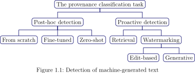
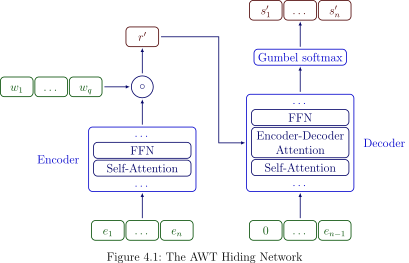
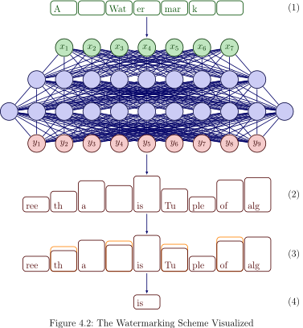
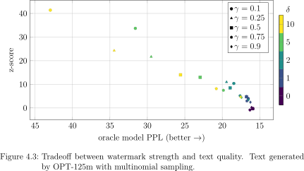
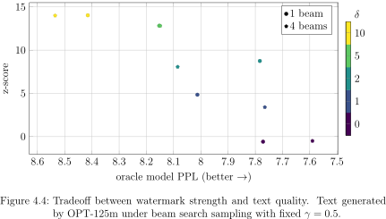
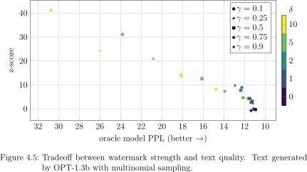
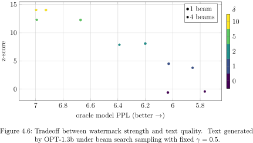
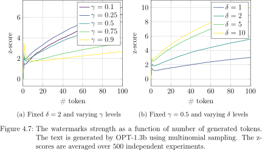
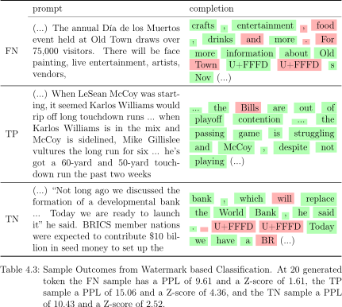

llms are getting larger and more capable at generating human-like text automatically. The generated texts are convincing but oftentimes factually false. While there are valid use cases for such models like writing assistance and information retrieval, there is also potential for misuse. Spreading misinformation and conducting academic fraud can be facilitated by llms. As llms require increasingly large amounts of training data and the model’s own output takes an increasing share of the total text generation, another challenge is to prevent model output from being used as training data for another model. This necessitates a mechanism for classifying a given text as either machine or human generated.
The current research on text detection mechanisms can broadly be categorized into two groups. One requires action by the owner of the generating language model while the other solely relies on so called post-hoc detectors where the detection phase is completely independent from the generation phase. Post-hoc detectors rely on signals that are inherent to machine generated text. Hence, they assume that there is a generalizable difference between human- and machine-generated text. This line of classifiers is discussed in chapter 3.
All post-hoc detection methods rely on a statistically significant bias in the distribution of machine-generated text when compared to a natural language distribution. This raises two concerns:
A detector could be triggered by text that deviates from the assumed norm but is still human-generated. As noted by Kirchenbauer et al. this could apply to non-native speakers or users of computer tools that assist in correcting grammar or finding synonyms.
Secondly the margin between ever improving llms and genuine human output could narrow so that either very long sequences are required to archive an acceptable level of confidence in the classification or that a classification becomes not possible at all.
These concerns and the theoretical limits of detectability motivate a second line of classifiers discussed in chapter 4. Classifiers of this kind do not assume inherent differences but rather rely on proactive measures taken by the model owner. These measures intent to create the information required for reliable classification artificially. This information can be associated with a generated text and be stored separately in a database, as described in section 4.1, or it can be embedded as a watermark in the generated text itself. Watermarking in llms is a subset of Steganography, i.e., the embedding of arbitrary hidden information in data. Watermarking of text as the output of llms is then the task of encoding a signal in the text’s token. This signal is not visible to a human reader but can be decoded algorithmically. The watermarking approach is discussed in section 4.2.
The contributions of this thesis are threefold. A compact set of preliminaries, tailored and interpreted for the provenance classification task, is presented. A survey of proposed solutions is conducted. The proposals are categorized according to their defining features. The proposals are analyzed quantitatively based on experimental results and qualitatively based on a standardized set of desired characteristics. The analysis highlights different aspects of the text classification task via the individual strengths and weaknesses of a proposed solution. Finally, an implementation of the watermarking scheme by Kirchenbauer et al. is provided in two versions. One is model agnostic and based on PyTorch. The other is minimal and pure C.

This chapter sets up the background for the remainder of this thesis. The necessary definitions are given for binary classification in general, language models, and their text generation strategies. Important concepts for evaluating text are summarized in section 2.2.4.
The following section provides an overview of the classification task and measures for evaluating results. It is based on a discussion of classification assessment methods by Tharwat and an introduction to roc analysis by Fawcett .
The detection of algorithmically generated text is a binary classification task. The text can either be labeled as machine-generated or human-generated. For a classifier tasked with detecting generated text the class machine-generated is synonymous with a positive result \(P\). The class human-generated represents a negative result \(N\). The sum of all actual negative instances \(N\) and all actual positive instances \(P\) is the total population of a classification experiment. Each input text is assigned one of two classes. This assignment is also called the classifiers prediction and hence results in a positive prediction \(\mathrm{PP}\) and a negative prediction \(\mathrm{NP}\).
The binary classification can have four distinct outcomes of which two are correct and two are erroneous classifications. A true positive outcome \(\mathrm{TP}\) occurs if actual and predicted class are both positive, i.e., the input text is known to be machine-generated and is also classified as such. The correct classification of an actual negative result \(N\) is considered a true negative. An outcome is false positive if the prediction is positive but the actual class is negative. This is also called a type-I error in statistics. A false negative or type-II error occurs if an actual positive result is classified as negative. An overview is given in the contingency table 2.1.
Classification performance is commonly assessed using accuracy \(\mathrm{Acc}\) and error rate \(\mathrm{Err}\). \(\mathrm{Acc}\) is the ratio of correctly classified instances and total number of instances: \[Acc = \frac{\mathrm{TP} + \mathrm{TN}}{\mathrm{TP} + \mathrm{TN} + \mathrm{FP} + \mathrm{FN}}\text{.}\] The error rate \(\mathrm{Err}\) measures incorrectly classified instances in relation to the total number of instances: \(1-\mathrm{Acc}\). These two measures don’t differentiate between the types of success and failure. Two classifiers can have identical accuracy but behave very differently with regards to type-I and type-II errors. For that reason they are commonly supplemented or replaced by the metrics precision and recall.
Definition 2.1 (precision). A real number between \(0\) and \(1\) that measures the amount of true positive outcomes in relation to the total amount of predicted positive outcomes: \[\mathrm{precision} = \frac{\mathrm{TP}}{\mathrm{PP}}\text{.}\] This quantity can also be given in terms of number of type-I errors with: \[\mathrm{TP} = \mathrm{PP} - \mathrm{FP} = \mathrm{PP} - (\text{type-I error})\text{.}\]
Definition 2.2 (recall). The amount of true positive occurrences relative to the actual positive population. With \(\mathrm{recall} \in [0,1]\) this value measures the rate at which the positive class was assigned correctly. The true positive rate can also be expressed in terms of type-II errors: \[\mathrm{recall} = \frac{\mathrm{TP}}{P} = \frac{P-\mathrm{FN}}{P} = 1-\frac{\mathrm{FN}}{P} = 1-\frac{(\text{type-II error})}{P} \text{.}\]
The F-score is a popular metric for evaluating the quality of a classifier. It combines the precision and recall metrics, thus considers both type-I and type-II errors.
Definition 2.3 (F-score). The \(F_1\)-score is the harmonic mean of precision and recall, i.e., \[F_1 = 2 \cdot \frac{\mathrm{precision} \cdot \mathrm{recall}}{\mathrm{precision} + \mathrm{recall}} \text{.}\] An additional parameter \(\beta\) is used to express relative importance of one metric over the other in the more general \(F_{\beta}\)-score. With \(\beta \in \mathbb{R}^+\) the \(F_{\beta}\)-score is given as \[F_{\beta} = (1+{\beta}^2) \cdot \frac{\mathrm{precision} \cdot \mathrm{recall}}{{\beta}^2 \cdot \mathrm{precision} + \mathrm{recall}} \text{.}\]
A classification decision is always a tradeoff between capturing all occurrences of a class in the population and avoiding to assign a class incorrectly. This tradeoff is captured in the relation between the true positive rate \(\mathrm{TPR}\) and the false positive rate \(\mathrm{FPR}\). TPR is a synonym for recall as defined in definition 2. The false positive rate is defined accordingly.
Definition 2.4 (false positive rate). The amount of false positive occurrences relative to the actual negative population: \[\mathrm{FPR} = \frac{\mathrm{FP}}{\mathrm{FP} + \mathrm{TN}} = \frac{\mathrm{FP}}{N} \text{.}\]
The true positive and the false positive rates are functions of the classifiers threshold level. If the threshold is set so that only the positive class is assigned, this will yield \(\mathrm{TPR} = \mathrm{FPR} = 1\). A threshold on the opposite side of the spectrum would yield zero positive predictions and hence \(\mathrm{TPR} = \mathrm{FPR} = 0\). Meaningful classification is only possible for thresholds between the two extremes. The goal is to achieve the highest possible ratio \(\frac{\mathrm{TPR}}{\mathrm{FPR}}\). Plotting FPR on the \(x\)-axis and TPR on the \(y\)-axis for all threshold levels yields a graph that is called the Receiver Operating Characteristic (ROC) curve.
Definition 2.5 (receiver operating characteristic ). Let \(\tau\) be a classifiers threshold in \((-\infty, \infty)\) and let \(\mathrm{FPR}(\tau)\) and \(\mathrm{TPR}(\tau)\) be the false positive and true positive rates at that threshold respectively. The ROC curve is then the set of all these parameterized points: \[\mathrm{ROC} = \left\{ \forall \, \tau: \big( \mathrm{FPR}(\tau), \mathrm{TPR}(\tau) \big) \right\} \text{.}\]
The ROC curve can be aggregated into the single scalar metric AUC-ROC. It measures the area under the ROC curve. As such it is an average score over all possible FPR values in \([0,1]\). The AUC-ROC itself takes values between \(0\) and \(1\). A perfect classifier would yield \(\text{AUC-ROC}=1\) and a random classifier \(\text{AUC-ROC}=0.5\).
This section is based on the third edition draft of Jurafsky and Martin’s introduction to speech and language processing . All discussions and definitions primarily consider causal language modeling as this is the prevailing nlp task for this thesis.
Language models assign probabilities to each token in a vocabulary. These probabilities are also called the probability distribution over the vocabulary and are used to predict the next token in a sequence of tokens.
Definition 2.6 (token). A token is a word, a fragment of a word, or a single character. Let \(t\) be a natural non-negative number between \(0\) and \(|\mathcal{V}|\). Then \(t\) is called the token ID. It is used to index the vocabulary \(\mathcal{V}\) and to identify individual token so that \(\mathcal{V}_t\) equals the \(t\)-th token in \(\mathcal{V}\).
For practical reasons additional tokens are needed that are not related to words or fragments thereof. These tokens are used to control the text generation algorithm and are therefore called control token. Depending on the format of the input a start of sequence identifier \(\langle \mathrm{S} \rangle\) is needed. This might be the case when batch processing prompts. A corresponding end of sequence token \(\langle \mathrm{EOS} \rangle\) is used to end the text generation loop. This token can be intentionally suppressed to guarantee that the generated text exceeds a specific minimum length. A language model could further encounter tokens that are not part of their vocabulary. A token of that nature defaults to the unknown token encoding \(\langle \mathrm{UNK} \rangle\). The control tokens and their meaning are summarized in table 2.2.
The probabilities are typically assigned based on a context. In the simplest case the context is comprised of the previous tokens that are either provided as the prompt or have already been generated.
There are a multitude of architectures for language models. This section will focus on two types: \(n\)-gram models as a baseline used in precursory research and llms as the prevalent architecture in current streams of research. The terms language model and simply model are synonyms in subsequent use.
Definition 2.7 (language model). A language model LM is defined as a function that takes a vocabulary of tokens \(\mathcal{V}\) and a sequence of \(n\) context token \(S_{1:n}\) as input. The context is a joined sequence of \(p\) prompt token and \(g\) previously generated token, so that \(n = p + g\): \[S_{1:n} = ( s_{1}, s_{2}, \dots, s_{p}, s_{p+1}, \dots, s_{n} ) \text{.}\]
Let \(T\) be a discrete random variable that represents the next token. Let further \(t\) be a token ID in \(\mathcal{V}\). The output of the model is a conditional probability distribution \(P(T = \mathcal{V}_t)\) over all token IDs \(t\) in the models vocabulary \(\mathcal{V}\). The probability of a specific realization \(\mathcal{V}_t\) is given as \(p(\mathcal{V}_t) \in [0,1]\) with \(\sum_t p(\mathcal{V}_t) = 1\) for all \(t \in \mathcal{V}\).
The models output is a vector of probabilities for every possible realization for \(T\): \[\mathrm{LM}(\mathcal{V}, S_{1:n}) = \left[ \, p(\mathcal{V}_1 \, | \, S_{1:n}), p(\mathcal{V}_2 \, | \, S_{1:n}), \dots, p(\mathcal{V}_{|\mathcal{V}|} \, | \, \, S_{1:n}) \right]\]
The final output token \(s_{n+1}\) will be sampled from the probability distribution over \(\mathcal{V}\) and appended to the sequence of previously generated token \(S_{1:n}\). The methods and strategies for this process are summarized in section 2.2.3.
\(n\)-gram language models are a simple implementation for the language modeling task. The eponymous \(n\)-grams are a group of \(n\) tokens. These tokens can be a single character, multiple characters, words, or even sequences of words. A word based tokenization is most common in this context. A \(1\)-gram, or more commonly a unigram, is hence considered to be a single word. A bigram would be a sequence of two words, a trigram a sequence of three words and so forth. This type of language model works on the hypothesis that the probability of a token is solely dependent on the previous \(n-1\) tokens. This is the Markov assumption and this name is sometimes also used in the descriptive term Markovian \(n\)-gram language model.
For the special case \(n=1\) a \(n\)-gram model can be considered a state machine with fixed transition probabilities between words. The probability of each \(n\)-gram is fixed and does not depend on the previously generated tokens. The predictions in bigram models depend only on a single previous token. In practice \(3\), \(4\), and \(5\)-gram models are used most frequently. As Lavergne et al. note, trigrams seem to cover most of the semantic and syntactic relations in natural language.
Definition 2.8 (\(n\)-gram language model). A case of the general language model given in definition 7. The length of the context sequence is set to a constant \(c\) that does not depend on the prompt length or the number of previously generated tokens: \[\mathrm{LM}(\mathcal{V}, S_{1:c}) = \left[ \, p(\mathcal{V}_1 \, | \, S_{1:c}), p(\mathcal{V}_2 \, | \, S_{1:c}), \dots, p(\mathcal{V}_{|\mathcal{V}|} \, | \, S_{1:c}) \, \right] \text{.}\]
This conditional probability is only defined if \(c\) previous tokens are available. Otherwise the input can be padded with \(c\) start of sequence token. Pad tokens can be modeled with an appropriate probability depending on the use case. A popular alternative is a piecewise decrement of \(c\) until enough previous tokens are available. The probability of this decremented \(n\)-gram is used to approximate the value for the original \(c\).
Purely statistical \(n\)-gram language models have been superseded by recurrent neural networks which in turn have been superseded by llms. llms combine large training datasets and the transformer architecture for neural networks, as proposed by Vaswani et al. . This allows them to increasingly learn not only co-occurrence probabilities of tokens but also their meaning. The assumption that tokens that occur in similar contexts also have a similar meaning is called the distributional hypothesis. This hypothesis also covers the inverse where the difference in meaning of a token can be measured in terms of the difference of their contexts. It is a linguistic concept discussed in detail by Harris .
Apart from visual stimulus and real-world interactions, humans can learn concepts by reading about them. Jurafsky et al. describe this as building a model for the meaning of a word or a sequence of words by associating it with the meaning of the words that they co-occur with. This knowledge is acquired over a long time and can be used for reasoning, building more complex models of abstract concepts, and associations with other words and concepts long after the point of initial acquisition. This concept of learning by reading is also used to explain the capabilities of llms.
Current llms are rightfully called large as they do not only possess parameter counts in the million and billions but are also trained on large corpora of natural, human-generated texts. This large amount of available knowledge during training can be used to build a rich set of associations between words, their contexts, and their meaning. Using this information is facilitated by the transformer’s self-attention mechanism. It allows to extract the information from an arbitrary large context. As the size of the context directly correlates to matrix sizes during training and inference and hence computational complexity, there is a limit to the context size in practice. It is commonly set to between \(1024\) and \(4096\) tokens but reach as high as one million in Google’s latest Gemini 1.5 model . A llm extends the general language model in definition 7 by making explicit use of a context \(S_{1:n}\) with \(n \geq 1024\). They further produce real values as a score for each token in the vocabulary as an intermediate step. These values form the logits vector. It is normalized to values between \(0\) and \(1\) in a second and final step to represent a probability distribution over the vocabulary. This is done by applying the softmax function – a generalization of the logistic function.
Definition 2.9 (logistic function). A sigmoid curve that outputs values between zero and one for any real input number \(x \in (-\infty,\infty)\). It is also referred to simply as the sigmoid: \[\sigma(x) = \frac{1}{1+\mathrm{e}^{-x}} \text{.}\]
Definition 2.10 (softmax function). A generalization of the logistic function. It takes a vector \(x=[x_1,x_2,\dots,x_k]\) of \(k\) real numbers with \(x_i \in (-\infty,\infty)\) for \(1 \leq i \leq k\) as input. The output is a probability distribution \(y\) over the \(k\) elements, i.e., each input \(x_i\) is mapped to a real number \(y_i\) between \(0\) and \(1\) with all probabilities summing to \(1\). A single probability \(y_i\) from the distribution \(y\) is defined as \[y_i = \text{softmax}(x)_i = \frac{\mathrm{e}^{x_i}}{\sum_{j=1}^{k} \mathrm{e}^{x_j}} \text{, for } 1 \leq i \leq k \text{.}\] The complete probability distribution \(y\) is a vector containing all probabilities \(y_i\): \[\begin{split} y = \text{softmax}(x) &= [ \, y_1,y_2,\dots,y_k \, ] \\ &= \left[ \, \frac{\mathrm{e}^{x_1}}{\sum_{j=1}^{k} \mathrm{e}^{x_j}}, \frac{\mathrm{e}^{x_2}}{\sum_{j=1}^{k} \mathrm{e}^{x_j}}, \dots, \frac{\mathrm{e}^{x_k}}{\sum_{j=1}^{k} \mathrm{e}^{x_j}} \, \right] \text{.} \end{split}\]
The output of a llm can be described in two steps. The first one produces a logits vector. This step is the result of the models forward pass and is hence referenced as the forward function. The second step applies the softmax function and yields the final probability distribution over \(\mathcal{V}\) as described for the general language model in definition 7.
Definition 2.11 (llm). A llm is a deterministic algorithm that takes a vocabulary of tokens \(\mathcal{V}\) and a sequence of \(n = p + g\) context tokens \(S_{1:n}\) as input. The context consists of \(p\) prompt token and \(g\) previously generated tokens: \[S_{1:n} = ( s_{1}, s_{2}, \dots, s_{p}, s_{p+1}, \dots, s_{n} )\] The algorithm is a concatenation of the forward and the softmax function where the forward function produces a real numbered score \(l_t\) for each token ID \(t\) given \(\mathcal{V}\) and \(S_{1:n}\). The resulting logits vector \[l = \left[ \, l_1, l_2, \dots, l_{|\mathcal{V}|} \, \right] = \text{forward}(\mathcal{V}, S_{1:n})\] is piped to the softmax function to produce the final probability distribution \[\begin{split} \mathrm{LLM}(\mathcal{V}, S_{1:n}) &= \text{softmax}(\text{forward}(\mathcal{V}, S_{1:n})) \\ &= \left[ \, p(\mathcal{V}_1 \, | \, S_{1:n}), p(\mathcal{V}_2 \, | \, S_{1:n}),\dots , (\mathcal{V}_{|\mathcal{V}|} \, | \, S_{1:n}) \, \right] \text{.} \end{split}\]
llms exhibit very good performance in all kinds of nlp tasks when compared to previous language model implementations. They are especially considered transformational in generative tasks like summarization, translation, or question answering.
The task of generating text with a language model is called causal or autoregressive generation. This is done by iteratively choosing the next token from the model’s probability distribution. The probability assigned to a token by the language model is conditioned on the context, which as per definition 7 consists of a prompt and the previously generated tokens. Hence there is a causal relationship between prompt, previous generation, and the next token. This relation is also autoregressive as the context does not only include a prompt from an outside source, most commonly a human, but also the model’s own previously generated token. Choosing the next token is also called decoding. The learned and aggregated knowledge of the model is encoded in its conditional probability distribution and is decoded by choosing a token based on these probabilities. The general procedure for generating text by decoding a llm generated probability distribution is given in algorithm 1.
The simplest decoding method is greedy search where the token ID with the highest probability is chosen at each time step: \[s_{n+1} = \text{decode}_\text{greedy} \bigl(p(t | S_{1:n}) \bigr) = \operatorname*{arg\,max}_{t \in \mathcal{V}} p(t | S_{1:n}) \text{.}\] This yields a deterministic text generation algorithm that will always produce the highest quality text possible given the context \(S_{1:n}\) and the model’s weights. The generated text, however, is prone to repetition and, as with every greedy approach, a global optimum is not guaranteed. A high probability token is unreachable for a greedy decoding algorithm if it occurs after a non-maximum probability token. This is partly addressed by the beam search method. Instead of selecting the one token with the maximum probability at each time step, a number of decodings are done in parallel. Each decoding stream selects a token with the next highest probability in descending order. Once all streams complete, the overall probability of the sequence is computed. The token that yields the highest probability for the subsequent sequence is selected as \(s_{n+1}\). This will find a strictly better solution than greedy search but will not guarantee an optimum unless the number of beams is equal to the number of options, i.e., \(|\mathcal{V}|\).
Holtzman et al. note that human preference is not always aligned with high probability decoding. High quality human texts display a high variance in the token’s probability as assigned by an evaluating language model. This points to either a significant difference between human and the model’s probability distribution or a human preference for varying probabilities. A low probability token can be seen as a surprise to the reader and a compilation of anticipated and surprising tokens could result in original, creative and overall human-like texts. Texts that display continuously high probabilities are evaluated as bland and repetitive by humans. Repetitions can be explained as a result of learning probabilities by co-occurrences. These probabilities will then favor mainstream token that continue the context sequence in most instances in the training data. This can have a self reinforcing effect as including mainstream tokens into the context will make other popular tokens even more likely. With decoding mechanisms that restrict the generated text to high probability tokens the algorithm is locked into a subset of the vocabulary without an opportunity to explore less likely transitions. This is the common dilemma between exploring and exploiting certain rewards and makes the case for including a degree of randomness in the decoding algorithm.
Choosing the next token randomly is called sampling. This method is also referred to as random or multinomial sampling. Symbolically it is denoted as \(x \sim p(x)\) where \(x\) is a realization of a random variable sampled from the distribution \(p(x)\). The generated text from this method exhibits more variety than deterministically decoded texts. It is however prone to be incoherent and less factual. Tokens with high probability are still likely to be sampled but the probabilities of all unlikely tokens combined yields a real chance for such tokens to be sampled regularly. This is mostly an issue for rather flat distributions and can be countered by reducing the sample space to the most likely token.
Sampling from a subset of the \(k\) highest probability tokens is called top-\(k\) sampling. It was first presented by Fan et al. . The method works by selecting the \(k\) tokens with the highest probability from the model’s output. The probabilities of the \(k\) token are then renormalized to yield a valid probability distribution. Finally the next token \(s_{n+1}\) is randomly sampled from only these \(k\) tokens. This method aims to balance variety and quality. A higher \(k\) creates a more varied decoding akin to random sampling. A lower \(k\) creates a higher confidence decoding. The results are identical to greedy search for \(k=1\) and to random sampling for \(k=|\mathcal{V}|\).
As top-\(k\) selects a predefined number of the highest probability tokens, the total amount of captured probability mass fluctuates depending on the shape of the distribution. The top-\(k\) token will represent a smaller fraction of the total probability mass the flatter the curve gets. This changes the amount of randomness in the selected tokens between each timestamp of the decoding phase. The number of top probability tokens \(k\) is hence not ideal to control randomness.
This issue is addressed with the top-\(p\) decoding method introduced by Holtzman et al. . Instead of defining a constant number of tokens to create a subset with a varying percentage of the total probability mass, top-\(p\) keeps the captured probability mass fixed and selects the minimum number of tokens to reach it. The \(t\) tokens with the highest assigned probability are added to the top-\(p\) vocabulary subset \(\mathcal{V}^p\) until the combined probability of the selected tokens reaches or exceeds \(p\), i.e., \[\sum_{t \in \mathcal{V}^p} p(t | S_{1:n}) \geq p \text{.}\]
A similar effect of controlling randomness can be achieved by reshaping the probability distribution over the whole vocabulary instead of creating a subset thereof. This is done by dividing the logit values of a model’s output by a parameter called temperature \(\in (0,1]\). Dividing by a value smaller than \(1\) will increase the numerators value proportional to its original value. Tokens with high scores get even higher scores both absolutely and in relation to other less probable tokens. After applying the softmax function, this yields a higher gradient probability distribution for lower temperature values. The distribution becomes more greedy-like. A temperature of \(1\) will preserve the distributions original shape and randomness.
In the field of information theory, entropy is a measure of information. It was first introduced by Shannon and is interpreted as the minimum number of bits required to encode all possible outcomes of a random variable.
Definition 2.12 (entropy, Theorem 2 ). Let \(X\) be a random variable and \(\mathcal{X}\) its sample space. Let further \(p(x)\) be a probability distribution over all \(x \in \mathcal{X}\). The entropy of \(X\) in bits is then defined as \[H(X) = - \kappa \sum_{x \in \mathcal{X}} p(x) \log_2 p(x)\] where \(\kappa\) is a scaling variable typically set to \(1\).
Language modeling is concerned with texts, i.e., sequences of tokens. Definition 12 can be applied to random variables where realizations are sequences of tokens. This yields the entropy of a sequence. Adapting \(\kappa\) to be the multiplicative inverse of the length of the sequence yields a more common metric for this use case – the entropy rate. It measures the average entropy per token. The entropy rate of a sequence \(S_{1:n} = [s_1, \dots, s_n]\) is defined as \(\frac{1}{n} H(S_{1:n})\).
A language \(\mathcal{L}\) can be modeled as a stochastic process, i.e., a time indexed sequence of discrete random variables with a sampling space of all valid sequences \(S_{1:n}\) of length \(n \in \mathbb{N}\). As languages contain possibly endless sequences of tokens the entropy of a language is given as the entropy rate of all sequences: \[H(L) = - \lim_{n \to \infty} \frac{1}{n} \sum_{S_{1:n} \in L} p(s_1, \dots, s_n) \log_2 p(s_1, \dots, s_n) \text{.}\]
Since infinite sequences of token do not exist for any language \(\mathcal{L}\), the true probability distribution \(\mathcal{H}(.)\) of \(\mathcal{L}\) cannot be known. A language model \(\mathrm{LM}\) instead aims to provide a model \(\mathcal{M}(.)\) that approximates \(\mathcal{H}(.)\). The entropy rate for language \(\mathcal{L}\) can be estimated by using the observed probabilities of the true distribution \(\mathcal{H}(.)\) and the log probabilities from \(\mathcal{H}(.)\). This yields the cross-entropy rate \[ H(\mathcal{L},\mathrm{LM}) = - \lim_{n \to \infty} \frac{1}{n} \sum_{S_{1:n} \in \mathcal{L}} \mathcal{H}(s_1, \dots, s_n) \log_2 \mathcal{M}(s_1, \dots, s_n)\] that represents an upper bound for the true entropy rate \(H(\mathcal{L})\): \[\begin{split} H(\mathcal{L},\mathrm{LM}) & = - \lim_{n \to \infty} \frac{1}{n} \sum_{S_{1:n} \in \mathcal{L}} \mathcal{H}(S_{1:n}) \log_2 \mathcal{M}(S_{1:n}) \\ & = - \lim_{n \to \infty} \frac{1}{n} \sum_{S_{1:n} \in \mathcal{L}} \mathcal{H}(S_{1:n}) \big(\log_2 \mathcal{M}(S_{1:n}) + \log_2 \mathcal{H}(S_{1:n}) - \log_2 \mathcal{H}(S_{1:n}) \big) \\ & = - \lim_{n \to \infty} \frac{1}{n} \sum_{S_{1:n} \in \mathcal{L}} \mathcal{H}(S_{1:n}) \left( \log_2 \mathcal{H}(S_{1:n}) + \log_2 \frac{\mathcal{M}(S_{1:n})}{\mathcal{H}(S_{1:n})} \right) \\ & = - \lim_{n \to \infty} \frac{1}{n} \sum_{S_{1:n} \in \mathcal{L}} \mathcal{H}(S_{1:n}) \log_2 \mathcal{H}(S_{1:n}) + \sum_{S_{1:n} \in \mathcal{L}} \log_2 \mathcal{H}(S_{1:n}) \frac{\mathcal{M}(S_{1:n})}{\mathcal{H}(S_{1:n})} \\ & = H(\mathcal{L}) + D_{\mathrm{KL}}(\mathcal{L} || \mathrm{LM}) \text{.} \end{split}\]
The Kullback-Leibler divergence \(D_{\mathrm{KL}}(\mathcal{L} || \mathrm{LM})\) represents the excess number of bits needed to express \(\mathrm{LM}\) rather than the true language \(\mathcal{L}\). It is a positive value if the model is an imperfect approximation of the language and gets closer to zero as the approximation improves.
Definition 2.13 (Kullback-Leibler divergence ). A measure for the difference of two discrete random variables \(P\) and \(Q\) and their respective probability function \(p\) and \(q\) defined on the same sample space \(\mathcal{X}\): \[D_{\mathrm{KL}}(P \, || \, Q) = \sum_{x \in \mathcal{X}} p(x) \log \left( \frac{p(x)}{q(x)} \right) \text{.}\]
The Shannon-McMillan-Breiman theorem states that the cross entropy rate in equation 2.22 can be simplified to \[ H(\mathcal{L},\mathrm{LM}) = - \lim_{n \to \infty} \frac{1}{n} \log_2 \mathcal{M}(s_1, \dots, s_n)\] if the underlying stochastic process, i.e., the language \(\mathcal{L}\), is stationary and ergodic.
A stationary process has a time invariant probability mass function. This means that a token \(s_n\) has the same probability as a token \(s_{n+t}\) where \(t\) is an arbitrary temporal offset. It further means that the distribution is invariant given either a context sequence \(S_{1:n}\) or \(S_{1:n+t}\). While this is, per definition 8, true for \(n\)-gram models it does not hold for llms or a language’s true distribution. Semantic and syntactic relations between token can span varied ranges and adding \(t\) token to the context \(S_{1:n}\) will likely affect them.
Ergodicity in this context means that all possible sequences of tokens will be realized eventually. For \(t \to \infty\) all elements in the sample space will be realized.
As with the stationary nature, the assumption of ergodicity of language is unlikely to be true. Equation 2.25 is therefore considered a useful simplification for sequences approaching infinite length rather than provable fact. The intuition for this simplification is that a sequence \(S_{1:n}\) with \(n \to \infty\) contains all other sequences. Summing over all possible finite sequences like in equation 2.22 is therefore unnecessary. Since infinite length is practically impossible the entropy metric is further simplified for computation on fixed length sequences as \[H(\mathcal{L},\mathrm{LM}) = \frac{1}{n} \log_2 \mathcal{M}(s_1, \dots, s_n) \text{.}\]
Perplexity is a measure of uncertainty that is tightly coupled to the simplified cross-entropy rate. It is defined as \(2\) to the power of the cross-entropy rate \(H(\mathcal{L}, \mathrm{LM})\). Using the model’s distribution \(\mathcal{M}(.)\) as an approximation for the language’s true distribution \(\mathcal{H}(.)\) adds uncertainty about a given sequence \(S_{1:n}\). It can be less likely under \(\mathcal{H}(.)\) than it is under \(\mathcal{M}(.)\). Encoding this uncertainty requires \(H(\mathcal{L}, \mathrm{LM})\) additional bits. Each of these bits has to be set by the model as the model has no knowledge whether a bit is used for expressing the actual language \(\mathcal{L}\) or model imperfection. This means that the model has to make \(2^{H(\mathcal{L}, \mathrm{LM})}\) additional decisions.
Definition 2.14 (perplexity, Equation 3.53 ). A measure for uncertainty about a sequence \(S_{1:n}\) introduced by approximating its true probability distribution by a model. \[\begin{split} \text{PPL}(\mathcal{L}, \mathrm{LM}) & = 2^{H(\mathcal{L}, \mathrm{LM})} \\ & = \mathcal{M}(s_1, \dots, s_n)^{-\frac{1}{n}} \\ & = \left( \prod_{i=1}^{n} \mathcal{M}(s_i | s_1, \dots, s_{i-1}) \right)^{- \frac{1}{n}} \\ & = \sqrt[n]{\prod_{i=1}^{n} \frac{1}{\mathcal{M}(s_i | s_1, \dots, s_{i-1})}} \end{split}\]
As described in Jawahar et al. , post-hoc classifiers can be grouped into three categories. The first group uses classifiers that are trained from scratch on a dataset of labeled machine-generated and human-generated text samples. These sorts of classifiers can work on ordered sequences of tokens, i.e, are language models themselves or work on unordered collections of token as so called bag-of-words classifiers. Simple language model classifiers, as in Lavergne et al. , rely on inherent features like perplexity and relative entropy. Bag-of-words classifiers work on metrics that do not rely on any given order among tokens and do not consider conditional probabilities between token pairs. Zero-shot detection form the second group of classifiers. Existing pre-trained models are used to assign probabilities to an input sequence. Sequences with a probability above a given threshold are considered to be machine generated. Gehrmann et al. assume that machine-generated texts make excessive use of a subset of the vocabulary while underrepresenting rare words. They leverage this by using a language model that is similar to the generating model to mark individual token with their respective probability and rank in the prediction of the next token. Another example in this category is DetectGPT by Mitchell et al. that compares the probability of an input sequence to the one of minor perturbations of the same sequence. The last group of classifiers are based on fine-tuned models. Zellers et al. train GPT2, BERT, and their own Grover model to minimize cross-entropy loss for making the right classification choice.
Jawahar et al. propose five desiderata for these so called post-hoc detectors:
Accuracy: Detecting machine-generated text reliably with a suitable tradeoff between false positives and false negatives.
Efficiency: The detector needs as little training data as possible to adapt to the output of a new language model.
Generalizability: Modeling choices like model architecture and size, training data, decoding method, and conditioning by the user via prompt or fine-tuning do not impact the detector’s reliability.
Interpretability: The detector’s classification is comprehensible to humans.
Robustness: Classification of machine-generated texts remains intact even on adversarial examples, i.e., text that is intentionally modified to avoid classification.
These classifiers are trained with the specific goal to detect machine-generated text. They tend to be relatively simple algorithms with all three examples basing their classification decision on only one feature.
Solaiman et al. describe a logistic regression detector on a tf-idf feature. The tf-idf measure is a combination of two independent measures: Term frequency tf and inverse document frequency idf. As a heuristic, it aims to describe the relative importance of a word in a collection of documents.
Luhn observes that communication via natural language is based on notions. Notions are a bit of information that will transfer the intended meaning with a high probability. Structurally notions can be paragraphs, sentences, or simply words. The smaller the notion, the higher the probability that the meaning is a widely accepted or even objective truth. Words are regarded as an atomic notion and form the building block of more complex notions. The frequency of such an atomic bit of meaning is suitable to encode the containing document.
Definition 3.1 (term frequency, Luhn ). Term frequency \(\mathrm{tf}(t,S)\) is the \(\log_{10}\) value of the raw \(\mathrm{count}(t,S)\) of any given token \(t\) in a sequence of tokens \(S\): \[\mathrm{tf}(t,S) = \begin{cases} 1 + \log_{10} \cdot \mathrm{count}(t,S) & \text{if $\mathrm{count}(t,S) > 0$} \\ 0 & \text{else .} \end{cases}\]
The term inverse document frequency idf was introduced by Spärck Jones . The document frequency of a term would be the number of documents that this term occurs in. A term with a high document frequency when compared to the total number of documents in the collection carries little information about the document in which it is contained. The contrary is the case for a term \(t\) with low document frequency \(\mathrm{df}(t)\). If one of these rare words occurs in a document it can be used as a discriminating feature.
Definition 3.2 (inverse document frequency, Spärck Jones ). The inverse document frequency \(\mathrm{idf}(t)\) measure of a term \(t\) is the inverse of the number of documents in a collection that contain \(t\). This number is scaled by the number of documents in the collection \(n\): \[\mathrm{idf}(t)= \log_{10} \left( \frac{n}{\mathrm{df}(t)} \right)\text{.}\]
The product of tf and idf yields the tf-idf measure. It is used as a weighting factor or a standalone feature in natural language processing.
Definition 3.3 (tf-idf, Jurafsky and Martin ). The \(\text{tf-idf}(t,S)\) is the two measures given in definition 15 and definition 16 multiplied: \[\text{tf-idf}(t,S) = \mathrm{tf}(t,S) \cdot \mathrm{idf}(t) \text{.}\]
The classifier presented by Solaiman et al. is intended to work with GPT-2 as the generating model. The training data consisted of GPT-2 outputs and human-generated texts scraped from the web. The classifier was subsequently tested on samples that were equally likely to be machine-generated and human-generated. In this context a document represents a sample and the whole corpus of training data and the samples equates to the collection of documents. This allows to compute \(\text{tf-idf}(t,S)\) for each token \(t\) in the models vocabulary \(\mathcal{V}\) and for each text \(S\) in the training data. For a given text \(S\), this yields a vector with \(|\mathcal{V}|\) entries: \[ \text{tf-idf}(S) = \big[ \text{tf-idf}(1,S), \text{tf-idf}(2,S), \dots, \text{tf-idf}(|\mathcal{V}|,S) \big] \text{.}\]
The training process of the logistic regression classifier aims to fit the logistic function as defined in definition 9. The two classes human-generated and machine generated are mapped to values of \(\sigma(x)\) approaching zero and one respectively. The input \(x\) is the sum of an offset \(o\) and the scalar product of a weights vector \(w\) and the tf-idf vector for a given sample \(S\). This vector contains the unigram tf-idf measures. In their work Solaiman et al. extend this vector with all bigram tf-idf measures of the sample. The probability of a sample \(d\) to be machine-generated is then given as: \[P\big(S \text{ is machine-generated}\, |\, \text{tf-idf}(S)\big) = \sigma \big( w \cdot \text{tf-idf}(S) + o \big) \text{.}\] During the training process the weights vector \(w\) and the offset \(o\) are updated so that the probability of a correct classification of the text \(S\) is maximized. A text \(S\) is classified as machine-generated if \(\sigma \big(w \cdot \text{tf-idf}(S)\big)\) is above a chosen threshold. Otherwise it is classified as human-generated.
When using multinomial sampling and a temperature of one, Solaiman et al. report classification accuracies between \(88\%\) for the smallest \(124\) million parameter model and \(74\%\) for the largest \(1.5\) billion parameter model. The detection accuracy increases to \(97\%\) at \(124\) million parameters and \(93\%\) at \(1.5\) billion parameters if a top-\(k\) sampling strategy with \(k=40\) is used. The authors report that longer sequences are easier to classify than shorter ones. They further speculate that a top-\(p\) sampling strategy would yield a lower accuracy classification.
Analysis 3.1. The discussed classifier can be considered a baseline for future work as it does not fulfill the desiderata proposed by Jawahar et al. .
The reported accuracies are highly dependent on the size of the generating model as well as the overall generating strategy.
The efficiency of this scheme is good as the computation of tf-idf scores has a time complexity in \(O(|\mathcal{V}|)\). Training the logistic classifier can be done with very little explicit training data but would of course benefit from a larger set. If the detector is trained by the same organization that also trained the generator model, like it is the case for Solaiman et al. , the required effort is reduced again. The same set of training data can be used to train the generator model’s weights and be used as human-generated labeled data for training the classifier.
The detector is trained on frequencies of specific token and how they differ from a learned expectation in human-generated text. There is no comprehensive data on how this approach generalizes to different generators. The authors do, however, notice a drop in accuracy as the generator’s parameter count increases. They further note that increased randomness by using top-\(k\) sampling with a larger \(k\) reduces accuracy.
The tf-idf vector is quite interpretable as it depicts exactly the tokens that identified the sample as either human- or machine-generated.
Remark 3.1. A bag-of-words classification relies on statistical measures on the composition of a text. Grammar or meaning in the form of conditionality of a tokens occurrence are neglected. It is observed that certain tokens are used excessively in machine-generated texts when compared to a collection of human-generated texts. This apparent preference of the generating model for some tokens allows the detector to classify an arbitrary bag of tokens with an accuracy well above random. The diminishing accuracy of detection with larger parameter sizes of the generating model also hints at a possible fundamental issue with this approach: There is no intuitive reason why the token frequency distribution of a text generating model should significantly deviate from the human baseline it was trained on. This gap could be narrowing further with ever increasing parameter sizes and other qualitative improvements and might diminish entirely in the future.
Lavergne et al. make use of a detector language model to compute two different metrics on input samples. The first metric is the detector model’s perplexity PPL given the input text. The second metric is the relative entropy between the detector model’s prediction given its full context and its prediction using an intentionally truncated context. While the authors specifically use \(n\)-gram language models both as the generators and the detectors of machine-generated texts, their approach of using a language models inherent understanding of a texts semantics and syntax does transfer to more sophisticated types of language models. A perplexity based classification is also a part of the current commercial llm detection offering GPTZero .
In their experimentation Lavergne et al. use \(n\)-gram language models with \(n \in \{2,3,4\}\) as generators and \(3\)-gram and \(4\)-gram models as detectors. These models are implemented with the SRILM toolkit . The detector models are trained from scratch on one of three corpora of natural language or as in their final experiment on a large collection of English \(n\)-grams from Google . For each of the features, a threshold is learned on labeled data. The classification is tested on samples of two thousand and five thousand words. The quality of the classification is finally reported as \(F_1\)-scores.
For their first experiment they use perplexity as given in definition 14 as an independent variable. The classifier is based on the assumption that human generated texts tends to have a lower perplexity count than machine generated ones. The authors report good detection performance with \(F_1\)-scores between \(0.83\) and \(0.97\) for text generated by a \(2\)-gram model. There is a slight improvement of \(0.03\) when a five thousand word long sample is used instead of a two thousand words long one. This improved detection quality on longer samples can still be observed when the input texts are machine-generated with \(3\) or \(4\)-gram models but the scores in general drop significantly. The average score for these setups is \(0.37\) with values ranging from \(0.21\) in two cases to \(0.66\) in one case.
The second experiment is using a relative entropy measure between differently sized \(n\)-grams as the classifying variable. The results from the first experiment suggest that a strictly higher order \(n\)-gram model as the detector is needed for successful classification. The results also show that there seems to be a stark decline in detection performance when comparing the \(4\)-gram detector and \(3\)-gram generator to the \(3\)-gram detector and \(2\)-gram generator setting. This implies that an additional token of context carries significantly more information for a \(2\)-gram model than for a \(3\)-gram model. The authors theorize that the majority of semantic and syntactic relations are already covered by \(3\)-grams. The design goal for the score to be used in the second experiment is hence to focus on those longer sequences that do contain additional information.
Let \(P\) be the probability distribution of an \(n\)-gram model. The probability function for a token \(s_{i+1}\) is then given as \(p\left(s_{i+1} | S_{i-n:i}\right)\). Similarly let \(Q\) be the probability distribution of a smaller model with a context reduced by one. The probability for a token \(s\) in \(Q\) is then \(q \left(s_{i+1} | S_{i-n+1:i}\right)\). The Kullback-Leibler divergence as defined in definition 13 between these two distributions measures the impact of one additional context token across all token in the vocabulary \(\mathcal{V}\). This measure is a non negative real number and only takes a zero value if the truncated token carries no information. It can be further broken down into a point-wise comparison for a single token \(s_{i+1}\) as:
\[ D_{\mathrm{PKL}}(s_{i+1} || S_{i-n:i}) = p\left(s_{i+1} | S_{i-n:i}\right) \log \left( \\ \frac{p\left(s_{i+1} | S_{i-n:i}\right)}{q \left(s_{i+1} | S_{i-n+1:i}\right)} \right) \text{.}\]
A high \(D_{\mathrm{PKL}}\) value for a token represents a high dependence on a larger context. This larger context would only be considered by a higher order model. If, on the other hand, a token \(t_{i+1} \in \mathcal{V}\) with the same context but a higher relative entropy than the actual token \(s_{i+1}\) exists, a longer range dependency between token \(s_{i+1}\) and its context was violated. Assuming that humans tend to be better at respecting these longer ranged dependencies this would point to a machine-generated sample. The specific \(n\)-gram \([s_{i+1}, S_{i-n:i}]\) generates a penalty score of:
\[\mathcal{S}^-(s, C_n) = \max_{t_{i+1} \in \mathcal{V}} D_{\mathrm{PKL}}(t_{i+1} || S_{i-n:i}) - D_{\mathrm{PKL}}(s_{i+1} || S_{i-n:i}) \text{.}\]
The overall score of a sequence \(\mathcal{S}(S)\) is defined as the average over all token \(s_{i+1} \in S\) where the context \(S_{i-n:i}\) is available. Hence the first \(n-1\) token will be disregarded and a higher score means an increase of probability of the sample being machine-generated.
\[\mathcal{S}^-(S, n) = \frac{1}{\text{len}(S)-n} \sum_{i = n}^{\text{len}(S)} \mathcal{S}^-(s_{i+1}, S_{i-n:i})\]
The experiment for testing the penalty score \(\mathcal{S}\) is setup identically to the authors’ first experiment. Three and four gram models are trained on different corpora of \(n\)-grams and used to detect output from two, three, and four gram models. Similarly to the previous results there is a negative correlation between reported \(F_1\)-score and order of the generating model. This correlation is higher when using a three gram model for detection. Achieved scores range from near perfect \(0.99\) on \(2\)-gram model generated texts to values around \(0.3\) for three and four gram models. The correlation is weaker for \(4\)-gram detector models. Interestingly the average \(F_1\)-score for detecting a \(3\)-gram model’s output with \(0.87\) is slightly higher than the average score for \(2\)-gram model output at \(0.85\). Detecting \(4\)-gram model output with an equal sized detector model yields average \(F_1\)-scores of \(0.58\) for sequences of two thousand tokens and \(0.79\) for longer five thousand tokens sequences. This is the main improvement over the perplexity based classifier tested in the first experiment.
Analysis 3.2. The \(F_1\)-scores provided by the authors indicate that both of the studied metrics primarily work for \(2\)-gram generator models and \(3\) or \(4\)-gram detector models. In those cases the detection performance is close to \(100\%\). Detection is still possible for \(3\)-gram models using a \(4\)-gram detector and the relative entropy metric but performance drops to \(87\%\). Text generated by \(4\)-gram models cannot be reliably detected by either metric.
The detector models have been trained from scratch on corpora of up to \(1000\) token. Since the detector model needs to be higher order than the generator model this approach is inherently biased towards the generating part in terms of efficiency. If the training data for generator models would approach the limits of availability, like it is the case for current llms, it could even be impossible to acquire an even larger dataset for training a detector model.
The generalizability of this detection approach is good as long as the generator model is a lower order \(n\)-gram model. This approach relies solely on metrics that leverage the detector model’s inherent understanding of a sample text. The detection quality will, however, depend on the training data. A detector trained on a larger corpus yields better results as shown by Lavergne et al. . This indicates that the probability distribution learned from these samples is more general and that more potential domain specific token compositions are encompassed.
The classifier’s decision is not interpretable by humans since measures like perplexity or relative entropy are not guaranteed to match with human intuition. These measures are a function of the detector model’s probability distribution and are only considered as an aggregate number. Neither the aggregate measures value nor the threshold it is compared against carry intuitive meaning. The interpretability might be improved by reporting the argmax of the relative entropy measure for each token, i.e., the alternative token that scored the highest point-wise Kullback-Leibler divergence. This would showcase an alternative and might explain a classification decision.
No adversarial changes to a generated output have been considered. The scheme does not rely on any one specific token but rather their composition. If the adversarial changes do not improve the texts quality to the level of the next highest order language model, this token composition will remain similar on aggregate. This approach can be regarded as robust against attacks.
Remark 3.2. Using a language model in a classifier is a promising approach as this allows to evaluate the relations between the input tokens instead of just the tokens themselves. It is unclear at this moment how these results map to modern llms but the intuition that a larger and more capable model will reliably detect a smaller one seems valid.
Furthermore the authors do not discuss different generating strategies or other variations in the setup. This is due to \(n\)-gram language models being less variable in their generated output than other architectures. Increased randomness or samples outside the domain of the detector’s training data could reduce the scheme’s accuracy.
The following classifiers employ more capable llms. This is required to match the significant increase in performance from more recent generator models.
Classifiers in this section use language models that are fine-tuned for the task. This allows to leverage the extensive pre-training of the base models.
Grover is a llm by Zellers et al. trained on the task of generating news articles. This task is different to causal left-to-right text generation as a news article is not a single section of text but rather consists of a headline, a body, and metadata. The metadata is the domain where the article is published in, the names of the authors, and the date of publication. It is information that does not directly relate to the content of headline and text body but it does provide context and can affect the overall textual style. One field \(f \in \mathcal{F}\) with \(\mathcal{F} = \{\text{domain}, \text{date}, \text{authors}, \text{headline}, \text{body}\}\) is the target for text generation while the other fields are concatenated to form a prompt. Each field \(f\) is enclosed in the special tokens \(\langle \mathrm{start-}f \rangle\) and \(\langle \mathrm{end-}f \rangle\). The target field is indicated by a single start token as the last token of the prompt. Text generation for the target field will continue until the matching end token is sampled. A field in the prompt can remain empty but any input is used to control and enhance the output in the target field.
The model uses the same architecture as GPT2 and is available as Grover-Base at \(124\) million parameters, Grover-Large at \(355\) million parameters, and Grover-Mega at \(1.5\) billion parameters. The models are trained on RealNews , a large corpus of metadata annotated news articles from \(5000\) news domains. Evaluation on a split of the training data shows that Grover, with metadata provided, produces superior results to both Grover without metadata as well as GPT2. This is derived from a reduction in perplexity on the body field between \(0.6\) and \(0.9\) once metadata is available in the prompt to Grover and a reduction of \(9.2\) and \(6.5\) when compared to plain GPT2 output. The text quality also improves with size of the generating model as Grover-Mega produces the best perplexity value overall at \(8.7\). Human evaluation also shows Grover generated fake news to be only slightly less trustworthy than human fake news.
Grover can be used as a classifier by prompting it with an article followed by the special token \(\langle \mathrm{CLS} \rangle\). After fine-tuning on a set of \(10\) thousand RealNews article bodies and generated fake articles, Zellers et al. report accuracies of up to \(99.8\%\) with Grover-Mega as the classifier and Grover-Base as the generator. This value decreases to \(91.6\%\) once the generating model is swapped with an equally sized Grover-Mega model. Smaller detector models fare worse. A Grover-Base detector achieves an accuracy of \(71.3\%\) when classifying Grover-Mega output while still managing \(90\%\) on a same-sized generator. This shows that detection accuracy correlates with the difference in size of generator and detector, as well as the size of the detector regardless of generator size. The authors also swap their detector models to BERT and GPT2 respectively. The results are worse but similar in structure to Grover based detection. This prompts the authors’ conclusion that a strong generator is also a strong post-hoc detector and that machine-generated text is best detected by the same model that also generated it.
Analysis 3.3. The detecting accuracy of Grover is good. This however is only true if the generator model is not significantly larger than the detector, if there are thousands of examples from the exact generator, and preferably if the generator and detector models share the same architecture. As such this scheme requires substantial fine-tuning on individual generators and cannot be considered efficient nor generalizable. The results are not interpretable as the classification decision is based on hidden state. The authors do not experiment with malicious modifications to generated texts with the intend of avoiding correct classification but given the highly specialized nature of this detector it is unlikely to show great robustness under attack.
Classifiers of this kind employ pre-trained language models without adapting them to the classification task at hand.
Gehrmann et al. use a language model to compute statistics on a given text. They are used to overlay information on the input text in a gui that the authors call GLTR. This is intended to help a human user in classifying the text as either human- or machine-generated. The authors also test the measures in a logistic regression based classifier to validate their discriminative potential. They could theoretically be employed in an automated classification scheme.
Given a text of \(n\) token \(S_{1:n}\) the GLTR statistics are
the probability of a token \(s_{n+1} \in \mathcal(V)\) given the previous \(n\) token \(p(s_{n+1} | S_{1:n})\),
the rank of token \(s_{n+1}\) with regards to the assigned probability mass of the distribution \(p(s_{n+1} | S_{1:n})\), and
the entropy of the predicted distribution \[-\sum_{s_{n+1} \in \mathcal{V}} p(s_{n+1} | S_{1:n}) \log_2 \big( p(s_{n+1} | S_{1:n}) \big) \text{.}\]
They are supposed to show whether tokens are predominantly sampled from the head of the classifier model’s distribution. The authors further hypothesize that this sampling pattern is true in all machine-generated texts. This method does not require access to the generating model but it relies on the assumption that the generating model’s distribution and the one from the model used in the classifier are similar. In fact this similarity needs to be greater than the similarity between generating model and a human’s natural distribution.
Their testing was minimal but it indicated the usefulness of the tool in assisting human decision making. Automated classification was only tested for measures 1 and 2. A smaller \(117\) million parameter GPT-2 version was used to compute statistics on a small sample of \(50\) human-generated and machine-generated texts each. The generating model was a bigger \(1.5\) billion parameter version of GPT-2. This test showed AUC-ROC values of \(0.71\) for the token probability measure (1) and \(0.87\) for the token rank measure (2). A separate test with the bidirectional BERT model by Devlin et al. as the classifying model yields \(0.7\) for measure 1 and \(0.85\) for measure 2. This indicates some robustness with regards to divergence of generating and classifying model – both in terms of size and architecture.
Remark 3.3. The GLTR tool aims to assist human decision making. It highlights certain peculiarities about a language model’s probability distribution and especially their decoding methods. The authors’ hypothesis that machine-generated text mainly consists of high probability token and that this is contrasted by humans often relying on synonyms and referring expressions is validated for their specific setting. This hypothesis is shared with other authors like Holtzman et al. but it is unclear whether these properties generalize to other language models, how they scale with bigger models, and how their distinctiveness changes when classifier model and generating model differ in architecture.
The authors point to potential issues with this method should the generating models distribution be artificially changed. They specifically refer to hidden seeds that are used in the pseudo-random decoding process that in turn autoregressively modifies the probability distribution for future token. This is what is being done deliberately with the watermarking method. Hence, applying a watermark to a model’s output reduces the detection accuracy by other methods.
Mitchell et al. formulate the hypothesis that machine-generated text can be detected by the assigned probabilities to its perturbations according to a language model’s probability distribution \(p\). Given a machine-generated text \(S_{1:n}\) and a minor perturbation thereof \(\widetilde{S}_{1:n}\) sampled from a perturbation function \(\varphi(S_{1:n})\) then the difference between the original sequence and the perturbed sequence is positive on average. This measure is termed perturbation discrepancy by the authors: \[d(S_{1:n}, p, \varphi) = \log p(S_{1:n}) - \mathbb{E}_{\widetilde{S}_{1:n} \sim \varphi(S_{1:n})} \log p(\widetilde{S}_{1:n})\text{.}\] The measure for a human-generated sequence would tend to be under the hypothesis. This is similar to the working hypothesis of Gehrmann et al. that states that language models primarily sample from the head of their probability distribution. If the machine-generated text is sampled only from high probability token than any perturbation should yield a lower probability on average since this probability is computed by the model itself. If the hypothesis is true, the sequence \(S_{1:n}\) is classified as \[\text{DetectGPT}(S_{1:n}) = \begin{cases} \text{machine-generated} & \text{if } d(S_{1:n},p,\varphi) > 0 \\ \text{human-generated} & \text{otherwise.} \end{cases}\]
For their experiments the authors create perturbations by masking out \(15\%\) of the \(n\) token in \(S_{1:n}\). They evaluate masking spans of \(2\), \(5\), and \(10\) consecutive tokens, finding \(2\)-gram token spans to perform best. The authors use a T5 model to fill in the masks with newly sampled token.
Mitchell et al. validate DetectGPT across a variety of domains. When using medium sized models between \(1.5\) and \(20\) billion parameters for generation and detection, AUC-ROC measures above \(0.92\) on average are reported. A larger 175 billion parameter model still yields AUC-ROC of \(0.83\) on average across different domains. The above measures are results from white-box experiments, i.e., the same model was used to generate the sample text and is used to compute the probabilities for it and its perturbations. This is a strong assumption for a post-hoc detection scheme as this means either open-sourcing the model or providing a detection api. The latter could be considered proactive and blurs the line to detection methods like watermarking in section 4.2 and retrieval in section 4.1. The authors provide some AUC-ROC measures for the black-box setting where the generating model is not necessarily the same as the detecting model. These results are not comprehensive but decreases in AUC-ROC of over \(30\) percentage points in the worst case show that DetectGPT is best suited for a white-box setup.
Analysis 3.4. DetectGPT yields good accuracy in the ideal setting. As only the aggregated AUC-ROC values are reported no conclusions as to the relation between TPR and FPR can be drawn. The results are only achieved under assumption of white-box model access. Generating perturbations for the detection mechanism to work is expensive. Up to \(100\) perturbations could be used to achieve the desired classification accuracy. The computational budget will be higher for detecting than for generating. Hence this method cannot be considered efficient. It is also not generalizable as a violation of the white-box assumption is shown to have significant negative impact on accuracy. The classification decision is interpretable. It is intuitive that a language model assigns the highest value to the sequence it actually sampled rather than any perturbation thereof. The method is not robust to adversarial action. Paraphrases are shown to negatively impact the methods performance and the white-box setup makes it especially vulnerable to targeted manipulation.
This class of detection methods requires action by the model owner. The various post-hoc methods rely on generation artifacts as inherent side effects of a language model’s text generation. These statistical artifacts are the result of differences in the underlying probability distributions from which humans and machines generate texts. With ever increasing quality of llm generated texts it is unclear whether such a difference in distributions is a lasting differentiator. As shown by Sadasivan et al. there is a theoretical limit to the performance of post-hoc detectors.
Let \(S\) be a sequence of token and \(\mathcal{L}\) be a set of all such sequences that are valid and meaningful to humans. Let further \(\mathcal{H}(S)\) be the set of paraphrases \(S'\) with similar meaning so that \(\forall S' \in \mathcal{H}(S): S' \simeq S \land S' \in \mathcal{L}\). A similarly defined set \(\mathcal{M}(S)\) contains all sequences \(\hat{S}\) that can be generated from a llm and that are similar to \(S\). Assuming that all sequences \(\hat{S}\) are in \(\mathcal{L}\), i.e., are meaningful to humans, \(\mathcal{M}(S) \subseteq \mathcal{H}(S)\) follows. If \(|\mathcal{M}(S)| \ll |\mathcal{H}(S)|\) the language model only represents a fraction of the true probability distribution of \(\mathcal{L}\). The output is less nuanced than natural language and, as a consequence, includes differentiating artifacts. If on the other hand \(|\mathcal{M}(S)|\) and \(|\mathcal{H}(S)|\) are similar, reliable post-hoc detection becomes harder as most of the possible expressions in \(\mathcal{L}\) are part of \(\mathcal{M}(S) \cap \mathcal{H}(S)\). The quality of a detector \(D\) measured in terms of AUC-ROC can be bound by the total variation distance between the true probability distribution and the approximation of the language model.
Definition 4.1 (total variation distance). Let \(p\) and \(q\) be probability distributions defined on the same sample space \(\mathcal{X}\). The total variation distance between \(p\) and \(q\) is then defined as the maximum absolute distance between the probabilities of the different distributions assigned to the same event \(x \in \mathcal{X}\): \[\delta(p,q) = \sup_{x \in \mathcal{X}} |p(x) - q(x)|\]
Theorem 4.1 (Theorem 1 ). Let \(\mathcal{M}\) be a language models probability distribution and \(\mathcal{H}\) be the human baseline. The AUC-ROC of a detector \(D\) that classifies an input text as either machine-generated, i.e., sampled from \(\mathcal{M}\) or human-generated is bounded by the total variation distance of \(\mathcal{M}\) and \(\mathcal{H}\) as \[ \textnormal{AUC-ROC}(D) \leq \frac{1}{2} + \delta(\mathcal{M}, \mathcal{H}) - \frac{\delta(\mathcal{M}, \mathcal{H})^2}{2} \text{.}\]
The ROC is a plot of a detector’s true positive and false positive rates for any threshold level \(\tau\). The quality of the detector \(D\) at threshold \(\tau\) is the difference \(\mathrm{TPR}_{\tau} - \mathrm{FPR}_{\tau}\). The absolute value of that difference is bound by the total variation distance of the models distribution \(\mathcal{M}\) and the human distribution \(\mathcal{H}\): \[\begin{split} \left| \mathrm{TPR}_{\tau} - \mathrm{FPR}_{\tau} \right| & = \left| P_{S \sim \mathcal{M}}\big( D(S) \geq \tau \big) - P_{S \sim \mathcal{H}}\big( D(S) \geq \tau \big)\right| \\ & \leq \delta(\mathcal{M}, \mathcal{H}) \end{split}\] Using \(\mathrm{TPR}_{\tau} \leq 1\) and integrating over the resulting inequality \[\mathrm{TPR}_{\tau} \leq \min \big(\mathrm{FPR}_{\tau} + \delta(\mathcal{M}, \mathcal{H}), 1 \big)\] yields the statement in equation 4.2.
Contrary to the post-hoc detection approach, the required information for detection is created proactively by the methods presented in this section. The information can either be embedded into the text itself or be stored separately. The prior is termed watermarking and is discussed in section 4.2. The latter is referred to as zero-watermarking in Rizzo et al. as no information is contained in the actual text. Another synonym for this method is retrieval as the relevant information is stored by the model owner or another trusted third party in a database and has to be retrieved from there. This approach is discussed in section 4.1.
Krishna et al. show that both watermarking and post-hoc detection schemes are vulnerable to paraphrasing. The paraphrasing attack aims to modify a machine-generated text to such a degree that it will not be detected anymore. The original text is obtained from a language model that is not controlled by the attacker. The text is then altered by reordering and replacing tokens while maintaining input semantics.
This can be done in a variety of ways. A general purpose llm could be prompted to paraphrase previous output of the same model or another model’s output in a single-shot approach. As noted by Krishna et al. this would likely yield high quality paraphrases suitable for avoiding post-hoc detection. This approach would, however, be easily defended against if the paraphrase itself would be watermarked. The authors also show that manual paraphrases are very hard to detect. This is less of a concern since the process cannot be automated and is hence mostly restricted to individual attackers. Due to the involved human effort it also blurs the differentiating line between the human- and machine-generated class. A local language model owned by the attacker is therefore identified as the most pressing concern. Krishna et al. specifically use a 11 billion parameter llm fine-tuned on the objective of sensibly paraphrasing text. Sadasivan et al. use a smaller 222 million parameter model originally trained for summarization by Zhang et al. in similar work. They also show the effectiveness of recursive paraphrases, i.e., incrementally modifying the original text while prompting a detector for feedback. The following section focuses on the attacking model by Krishna et al. and the associated proposed retrieval based defense.
The authors use a fine-tuned version of the T5-XXL model by Raffel et al. that they call Dipper. The model aims to paraphrase texts on a paragraph level while also considering additional context like a prompt and two control variables. The control variables are lexical diversity \(c_L\) and order diversity \(c_O\). Both are provided in terms of percentages.
Definition 4.2 (lexical diversity). A measure of the relation of token co-occurrence in both the original sequence \(S_{1:n}\) and its paraphrase \(P_{1:m}\). Using \(T = \{s_i: s_i \in S_{1:n} \cap P_{1:m}\}\) as a bag of token that appear in the original and in the paraphrase, this yields: \[c_L(S_{1:n}, P_{1:m}) = 100 - \frac{|T|}{n} \text{.}\]
Definition 4.3 (order diversity, Kendall \(\tau\) distance ). A measure to compare the ordering of common token in the original sequence \(S_{1:n}\) and the paraphrase \(P_{1:m}\). Let \(S^*\) and \(P^*\) each be a list of tokens from a shared vocabulary and length \(\text{min}(n,m)\). \(S^*\) contains every token from \(S_{1:n}\) except for those that have potentially been truncated or are not also part of \(P_{1:m}\). \(P^*\) contains every token from \(P_{1:m}\) except for those that have potentially been truncated or are not also part of \(S_{1:n}\). Let further \(\mathcal{P}\) be a set of index tuples \(\{i,j\}\) representing distinct token pairs \(\{s_i, s_j\}\) in \(S^*\) and \(\text{index}(P^*,x)\) be a function that returns the index of token \(x\) in \(P^*\) assuming \(x \in P^*\). The Kendall tau distance between \(S^*\) and \(P^*\) is the sum of all token pairs that occur in opposite order \[K_{\tau}(S^*, P^*) = \sum_{\{i,j\} \in P, i < j} k_{i,j}(S^*,P^*)\] where \(k_{i,j}(S^*,P^*)\) is a helper function so that \[k_{i,j}(S^*,P^*) = \begin{cases} 0 \text{ if } \text{index}_{P^*}(s_i) < \text{index}_{P^*}(s_j) \\ 1 \text{ if } \text{index}_{P^*}(s_i) > \text{index}_{P^*}(s_j) \text{.} \\ \end{cases}\] The Kendall tau distance takes values between \(0\) if the lists \(S^*\) and \(P^*\) are identically ordered and \(\frac{1}{2} \cdot \text{min}(n,m) \cdot \big( \text{min}(n,m)-1 \big)\) if the two lists are reversed. The order diversity is then given as the normalized Kendall tau distance: \[c_O(S_{1:n},P_{1:m}) = 100 - \frac{2 \cdot K_{\tau}(S^*, P^*)}{\text{min}(n,m) \cdot \big( \text{min}(n,m) - 1 \big)} \cdot 100 \text{.}\]
Krishna et al. use two different English translations of originally non-English novels and treat them as paraphrases during training of their Dipper model. One translation is considered the original \(S\) and one its paraphrase \(P\). Each sequence consists of a list of sentences so that \(S = (S'_1, S'_2, S'_3, \dots)\) and \(P = (P'_1, P'_2, P'_3, \dots)\). Since the different versions may vary in the number of sentences used, an algorithm to align pairs of sentences with the same meaning across the versions is needed. This is done by computing a similarity score for each sentence and then group them into alignment pairs by maximizing the pairs similarity. The result is a set \(A\) of alignment pairs where each pair consists of one or more sentences from \(S\) and \(P\) respectively.
Definition 4.4 (SentencePiece semantic similarity). The similarity of two sentences \(S'\) and \(P'\) is a value in \([0,1]\) and is computed as the cosine similarity \[\text{sim}(S',P') = \frac{S' \cdot P'}{||S'|| \cdot ||P'||}\] where \(S'\) and \(P'\) are a fixed size vector embeddings of the respective sentence. The embedding is the average of an embedding model \(e(.)\) applied to every token in a sentence so that \[ S' = \frac{1}{|S'|)} \sum_{i=1}^{|S'|} e(q_i) \text{.}\] The metric is referred to as \(\mathrm{sim}_{\mathrm{SP}}\) if the encodings of the SentencePiece tokenizer described by Kudo and Richardson are used as the implementation of \(e(.)\).
They select a subset of these alignment pairs and replace the selected sentences in the original with their paraphrase sentences. Three paraphrase sentences are shuffled randomly and inserted into the original for each training iteration. The paraphrased section is marked with the special token \(\langle \mathrm{p} \rangle\) at the beginning and with \(\langle \backslash \mathrm{p} \rangle\) at the end. The control variables \(c_L\) and \(c_O\) are computed as per definitions 19 and 20 and are prepended in plain text form. Given the alignment pairs \(\{S'_4, (P'_3,P'_4)\}\) and \(\{S'_5, P'_5\}\) this yields a prompt sequence to Dipper of the form \[\text{prompt}=\big( \text{"lex}=c_l \text{, order}=c_o \text{"},S'_1,S'_2,S'_3,\langle \mathrm{p} \rangle,P'_5,P'_3,P'_4,\langle \backslash \mathrm{p} \rangle,S'_6 \big) \text{.}\] The loss for each step is computed based on the original sentences \(S'_4\) and \(S'_5\).
Three different language models are used to generate sequences of at least \(300\) token. The models are GPT2-XL with \(1.5\) billion parameters, an OPT model with \(13\) billion parameters , and a \(175\) billion parameters version of GPT-3 . These sequences are created as open-ended generations following a two-sentence prompt or as the answer of a long-form question answering task. The prompts and the questions are taken from Wikipedia and Reddit respectively and the real continuations and answers are kept for evaluating the classification accuracy.
The paraphrases created by Dipper are evaluated on their detection accuracy and their semantic similarity with the original language model generation. The detection accuracy in this case is the true positive rate with a false positive rate pegged at \(1\%\). Semantic similarity is measured based on the similarity of SentencePiece encodings as defined in definition 21.
The watermarking scheme by Kirchenbauer et al. described in section 4.2.3 achieves almost perfect accuracy for unperturbed language model output. Watermarked output from GPT2-XL and OPT-13B is detected as such with a probability between \(99.9\%\) and \(100\) at a false positive rate of \(1\%\). This is true for both continuations from the open-ended generation task as well as the long-from question answering task. As the GPT-3 model was only accessible via api no watermark could be applied. The true positive rate is reduced once the original output is paraphrased. With a lexical diversity set to \(c_L = 20\) accuracies drop between \(1.1\) and \(3.7\) percentage points. The detection accuracy is negatively correlated with increases in lexical diversity and order diversity of the paraphrase and reach a low of \(51.4\%\) at \(c_L=60\) and \(c_O=60\) with OPT-13B for the question answering task. The accuracy for detecting long-form question answers is generally lower than for open-ended text generations with a delta of \(1.95\%\) on average for OPT-13B and \(1.88\%\) for GPT2-XL. Additionally, the detection accuracy for the larger OPT-13B model is consistently lower across all settings than for the smaller GPT2-XL model.
Post-hoc detection shows similar relations between language model size and amount of controlled diversity in the paraphrase on one side and reported true positive rates on the other. This is showcased by the data for the DetectGPT classifier by Mitchell et al. described in section 3.2.2. Original output from GPT2-XL is detected with a probability between \(70.3\%\) for open-ended generation and \(74.9\%\) for question answering. This range is dropped to \(14.3\%\) and \(29.8\%\) for the bigger OPT-13B model. The detection accuracy for slightly paraphrased OPT-13B output at \(c_L=20\) only reaches \(3.3\%\) for open-ended generation and \(15.0\%\) for question answering. The values for paraphrased GPT2-XL output remain at higher levels but the decline with an increase in paraphrase diversity is of a similar magnitude. They are approaching \(0\) for OPT-13B at the highest diversity setting \(c_L=60,c_O=60\). The significantly bigger GPT-3 model gets a \(0\%\) TPR at \(1\%\) FPR even for unperturbed output.
It is noticeable that the question answering task yields a generally higher detection accuracy than the open-ended generation task under post-hoc detection. This is contrary to the results under the watermarking scheme.
Krishna et al. also present a classifier for machine-generated text that is motivated by the relative effectiveness of the above described paraphrase attack on other detection mechanisms. Their scheme assumes that the model is only accessible via a controlled api. The operators of that api need to store every generated output from their model in a database. They further need to provide an endpoint that allows to upload text for classification. The text is classified as machine-generated if a similarity measure between the text and at least one entry in the database exceeds a threshold. This method does not need access to the models post-processing and decoding like it is the case for generative watermarking in section 4.2.3. A classification decision by this method only considers language models whose output is archived and accessible via a database.
An output sequence \(S_n\) is generated by repeatedly decoding a models probability distribution based on the previously generated sequence starting with the original prompt \(S_p\). This is described in algorithm 1 and yields a concatenation of the prompt sequence \(S_p\) and the sequence of generated token \(S_g\): \(S_n = S_p \oplus S_g\). The database is constructed as the set of all \(N\) generated text sequences \[S = \left[ S_{1:n_1}^{(1)}, S_{1:n_2}^{(2)}, \dots \right] \text{.}\] For every text \(P\) submitted for classification, the similarity score between it and every database entry \(S_{n_i}^{(i)} \in S\) is computed. The maximum over all similarity scores is compared to the classification threshold \(\tau\). If \[\max_{i} \, \mathrm{sim} \left( S_{n_i}^{(i)}, P \right) > \tau\] the text is classified as machine-generated. It is labeled as human text otherwise.
The authors evaluate two different similarity metrics. The first is the same \(\mathrm{sim}_{\mathrm{SP}}\) metric based on SentencePiece encodings that is used to align sentences in the preprocessing of the data for fine-tuning. The second metric \(\mathrm{sim}_{\mathrm{BM}25}\) makes use of the idf based ranking score BM25 as presented by Robertson and Zaragoza . The latter is found to be more effective for the retrieval task.
The detection accuracy at a fixed false positive rate of \(1\%\) of the retrieval based classifier is significantly improved over watermarking and post-hoc detection. On a database of 9 thousand generated sequences from the question answering task pooled from all three models, accuracies of \(95.2\%\) for GPT2-XL, \(94.4\%\) for OPT-13B, and \(96\%\) for GPT-3 are reported on the hardest perturbation setting of \(c_L=60,c_O=60\). The value for GPT-3 is outstanding as it is the highest reported accuracy on the largest model of the set. This is in stark contrast to the \(0\%\) reported for DetectGPT. The accuracy for the open-ended generation is less with values of \(78.7\%\) for GPT2-XL, \(79.1\%\) for OPT-13B, and \(37.4\%\) for GPT-3. These values are still an improvement of around \(20\) percentage point over watermarking, the next best alternative.
Remark 4.1. Retrieval is a promising scheme for detecting machine-generated text. It shows unprecedented performance under the paraphrase attack but also faces issues when scaling both the language model size as well as the size of the database holding previous generations. The inadequate detection accuracy for open-ended generations by the 175 billion parameter GPT-3 model signify challenges with larger language models. This is a shared concern with other detection methods and, as the authors note, can likely be countered with improved similarity scores. Improving the encoding method with better and more training data and fine-tuning on paraphrased or otherwise perturbed sequences could yield embeddings that better represent the models true distribution and thus creates a more accurate similarity score.
Scaling the database appears to be a more general problem. The authors study relatively small database sizes. Most of their experiments have been done on only \(6\) and \(9\) thousand generations respectively. They do experiment with a database of one to \(15\) million generations of which they create two thousand paraphrases. In the best case the detection accuracy decreases by \(1\%\) when working on the \(15\) million dataset compared to the one million dataset. The authors themselves note that this is still a relatively small amount of samples as they assume popular llm apis to serve millions of queries a day. Assuming a linear relationship between database size and \(1.25\) million queries a day, the detectors performance would deteriorate by \(30\%\) in a year. This presents a lower limit prediction as the decrease in performance from one to \(15\) million is almost tenfold at \(9.6\%\) when another set of generations is used.
Krishna et al. do not present any theoretical guarantees for their detection scheme but their experiments point to a problematic adaption for productive usage. The requirements for maintaining a retrieval infrastructure and efforts to provide data security and protection on millions of customer queries add to the scaling problems.
Methods for encoding information into a given media like text, image, or video is called steganography. The goals are broadly to transfer the desired information via the channel, i.e., the media without perceivably modifying the content. It is further required that the information remains useful and imperceivable in case of corruption of the channel. Watermarking is a subset of steganography with a focus on proving provenance for securing intellectual property rights or for avoiding misuse of a language models generative prowess. Watermarking techniques are more common in visual media where the channel naturally carries more noise and hence allows to encode hidden information in that noise. The emergence of llms as capable text generation systems spurred interest in applying watermarks to text. Previous watermarking methods for texts focused on encoding the watermark information into pre-existing text. Kuditipudi et. al term these edit-based methods and contrast them to generative methods. The latter aims to include the watermark information into the generation process. This is becoming increasingly popular with more powerful llms. Generative methods on llms gain access to a per token probability distribution and incorporate this information into their scheme.
A survey of legacy watermarking techniques is conducted in section 4.2.1. Section 4.2.2 covers a transformer based neural network by Abdelnabi and Fritz trained to hide a given message into a pre-existent text. As this method employs a separate model and encodes the watermark message into a given text, it is part of the edit-based category. Section 4.2.3 introduces a generative method by Kirchenbauer et al. .
The following summary of watermarking techniques is broadly based on chapter \(3\) in Rizzo et al. .
A popular and thoroughly researched method for embedding a watermark in text is image based. In a past when text was mainly present in printed form treating an immutable text body as a whole as an image was a valid approach. The watermark bits can be encoded in the relative brightness of such a grayscale image or by shifting parts of the text slightly horizontally or vertically. Another approach is to use artificial changes on a word or character level. These can affect the size of spacing between words, scaling of individual characters, and the sizing of single attributes like serifs and strokes. Methods of this kind are only applicable to digital texts that remain in an image based format. With texts being predominantly shared in text based formats like PDF, Word, or plain text, these techniques are not relevant for the domain of this thesis.
Syntactic methods exploit ambiguity in natural language. The first step is to build a syntax tree of the text. This step depends on the language and highlights a major shortcoming of the method. It is rule based and does not generalize across different languages. The watermark can be encoded by changes to the syntax tree under the premise to preserve the original meaning. Permissible syntactic operations are typically clefting, passivization, and activization. Clefting is the process of creating an unnecessarily complex syntax. The number of valid syntax simplifications can be used to store information. Activization and Passivization change the grammatical voice to the respective opposite form. Apart from the obvious changes in style and tone this method does not always preserve the original meaning. Subtleties like idiomatic versus literal meaning might get lost in the process.
Semantic methods make use of systematic substitution of synonyms and more general rephrasing. These methods share similar shortcomings with syntactic measures as they are rule-based and thus language dependent. The original text is altered and preserving its quality cannot be guaranteed.
Structural methods aim to preserve both original content and appearance. The watermark is rather achieved by adapting the encoding of the text. This can be done by combining multiple Unicode whitespace characters of different width, by using invisible Unicode characters such as a zero-width whitespace, or as in Rizzo et al. by using so called Unicode confusables. Confusables are symbols that have a different numerical code but are very similar when rendered. They are also referred to as homoglyphs as they are visually almost indistinguishable.
As per Christ et al. a watermark for text should have the following three characteristics.
Undetectability: A watermark should not be visible to a human reader and there should be no computationally feasible detection algorithm. The quality of the generated text should be the same as any artificially introduced degradation might be detectable. A degraded performance would also naturally select against llm provider that employ such a watermarking scheme in an arms race for ever improved model performance.
Completeness: The watermark should be efficiently detectable. This also applies to sections of the watermarked text and to text without knowledge of the original prompt.
Robustness: The watermark should allow for reliable classification of text. False positives, i.e., classifying human-generated text as machine-generated should be negligible. The watermark should further remain valid even after perturbations of the original output text – be it with good or malintent.
Applying a watermark to a pre-existing cover text means that no access to the generating model and its sampling process is needed. Such an approach is thus more portable between different generating models. A post generation watermarking scheme is also not bounded by a causal models left-to-right context as the whole cover text is already generated and available as context for the watermarking process. However, this also means that the generating models understanding of the cover text cannot be leveraged.
This section is used to present the awt by Abdelnabi and Fritz , a Transformer based watermarking scheme that works on already generated text, i.e., under the black-box assumption. Transformer denotes a neural net architecture proposed by Vaswani et al. . It relies solely on the attention mechanism to represent relations between different input positions. This allows for a greater parallelism compared to recurrent or convolutional neural networks.
Definition 4.5 (attention ). Let \(S_{1:n}\) be a sequence of \(n\) tokens. Attention is defined as a function that takes a query matrix \(Q\) and a key-value pair of matrices \(K\) and \(V\) as input. These matrices are each made up of \(n\) vectors of identical but configurable size \(\mathrm{dim}(k)\). Every individual token \(s_i\) can be represented by its embedding vector \(e_i\) of size \(\mathrm{dim}(e)\) where \(\mathrm{dim}(e) = \mathrm{dim}(e_i)\) for every \(i\) with \(1 \leq i \leq n\). Combining all embedding vectors results in the \(n \times \mathrm{dim}(e)\) matrix \(E\). With trainable \(\mathrm{dim}(e) \times \mathrm{dim}(k)\) weights matrices query, key, and value are defined as \[Q = E W_Q \text{, } K = E W_K \text{, } V = E W_V\] respectively. The resulting attention is a vector of size \(\mathrm{dim}(k)\) for each of the \(n\) tokens in \(S_{1:n}\). The specific Scaled Dot-Product Attention in Vaswani et al. is defined as: \[ \mathrm{Attention}(Q,K,V) = \mathrm{softmax}\left( \frac{QK^T}{\sqrt{\mathrm{dim}(k)}} \right)V \text{.}\]
The result of definition 22 is a matrix and is also called an attention head. It is used to provide the model with full and weighted access to the context. Multiple attention heads can be combined to form multi-head attention. This is done by training \(m\) sets of \(W_Q\), \(W_K\), \(W_V\) weights matrices independently. The individual attention heads \[Z_i = \mathrm{Attention}_i(Q_i,K_i,V_i)_{(n \times \mathrm{dim}(k))}\] for \(1 \leq i \leq m\) are computed as per equation 4.15 and concatenated into a single matrix \(Z\) with \(m \cdot \mathrm{dim}(k)\) columns: \[Z = \left[ Z_1 \dots Z_m \right]_{(n \times m \cdot \mathrm{dim}(k))} \text{.}\] The final \(n \times \mathrm{dim}(k)\) \(m\)-head attention matrix is obtained by multiplying the combined matrix with a \(m \cdot \mathrm{dim}(k) \times \mathrm{dim}(k)\) weight matrix \(W_O\).
Definition 4.6 (transformer ). An architecture for sequence to sequence language models that consists of encoder and decoder blocks. The encoder block consists of \(l\) individual encoder layers which in turn mainly consists of an attention sub-layer and a feed-forward network sub-layer. The decoder block consists of \(k\) individual decoder layers that are similar to an encoder layer but add an additional attention sub-layer. The feed-forward network consists of two linear functions and a relu: \[\mathrm{FFN}(x) = \max(0,xW_1 + b_1)W_2 + b_2 \text{.}\]
Given a sequence of tokens \(S_{1:n}\) and their initial embeddings \(E_{1:n}\), the encoder blocks produce intermediate representations \(R_{1:n}\) thereof. The encoder block consists of \(l\) individual encoder layers and the intermediate representation is obtained by recursively applying encoder layers on the initial embedding, so that \[R_{1:n} = \mathrm{encoder}_l \big( \dots \mathrm{encoder}_1(E_{1:n}) \big) \text{.}\] An individual encoder layer receives the initial embedding \(E_{1:n}\) or the output of the previous encoder layer as input. The attention matrix is computed as per equation 4.15 with query, key, and value matrices based on the input. As all variables are based on the same input embedding this layer is called self-attention. The attention matrix is added to the original input and the resulting sum is normalized and fed to the feed-forward layer.
The decoder block consists of \(k\) individual decoder layers and produces the models output sequence \(S_{n+1:n+x}\). A single decoder layer uses self-attention on the previously generated \(g\) tokens \(S_{n+1:n+g}\). Before the feed-forward layer an additional attention layer, called encoder-decoder attention, is used. It uses query values based on the self-attention augmented input \(S_{n+1:n+g}\) but keys and values based on the encoder representation \(R_{1:n}\). This allows the decoder to relate the current generation to relevant parts of the prompt \(S_{1:n}\) via its encoded representation as well as the already generated tokens \(S_{n+1:n+g}\).
awt consists of three major components: The hiding network used to embed the watermark bits \(W_{1:q}\) into the cover text \(S_{1:n}\), the revealing network to extract unknown \(W_{1:q}\) from a watermarked text \(S'_{1:n}\), as well as a discriminator to classify an input text as either watermarked or not. The component’s weights can be trained using the discriminator and two metrics for quantifying semantic and syntactic correctness of the watermarked text \(S'_{1:n}\). The authors use a model dimension of \(512\), i.e., each block or sublayer consumes and produces vectors of that size.
The hiding network closely resembles the original Transformer architecture informally defined in definition 23. The encoder block consists of three identical encoder layers that each use a four headed self-attention layer. The encoder takes the cover texts token embeddings \(E_{1:n} = (e_1, \dots, e_n)\) as input and produces the intermediate representation \(R_{1:n} = (r_1, \dots, r_n)\) as output.
\(R_{1:n}\) and the watermark information \(W_{1:q}\) is combined by first creating a single vector of size \(512\) each for intermediate representation and watermark information and then adding them up to form a single representation \(r\). The watermark information is a message consisting of \(q\) binary bits. This bit sequence is fed into a ffn consisting of a single fully-connected layer so that \[w = \mathrm{FFN}\big( (w_1, \dots, w_q) \big)\] is a vector of size \(512\). The intermediate representation is merged into a single vector by average pooling: \[r = \frac{1}{n} \sum_{i=1}^{n} e_i \text{.}\] The final watermarked intermediate representation is then the sum of these two vectors \(r'=r+w\).
The decoder block is similar in architecture to the encoder block. It consists of three identical decoder layers and uses four independent attention heads. The self-attention layer takes the same embeddings of the cover text as the encoder as input. To ensure the auto-regressive nature of the transformer the input \[E_{0:n-1} = (0, e_1, \dots, e_{n-1})\] is shifted right by one position compared to the encoders input \(E_{1:n}\) and the self-attention values for any future position is masked. The decoder is thus configured to work as an auto-encoder and outputs a logit vector, i.e., assigned scores for each token in the vocabulary. The watermarked text is sampled from the logit vector one token at a time using Gumbel-Softmax.
Definition 4.7 (categorical distribution). A distinct probability distribution that assigns a probability to every possible realization of a categorical variable \(X\). \(X\) can take on one of \(k\) categories and the probability for each category \(i\) is given as \(P(X=i) = p_i\) for \(1 \leq i \leq k\).
A sample of \(X\) is encoded as a one-hot vector of size \(k\). These vectors can be interpreted as the corners of a \((k-1)\)-simplex in \(k\)-space.
Generating text is sampling from a categorical distribution where every token \(\mathcal{V}_i\) in the vocabulary \(\mathcal{V}\) with \(1 \leq i \leq |\mathcal{V}|\) is a category. The probability for each category is given as \(p_\mathcal{V} = [p_1, \dots, p_{|\mathcal{V}|}]\). These probabilities are commonly obtained by applying the softmax function to a language model’s output scores over \(\mathcal{V}\), i.e., the logit vector. This is described in more detail in section 2.2.3 for the causal text generation use case.
The two-step process of first creating the categorical probability distribution over \(\mathcal{V}\) and then sampling from it is shown to be equivalent to single step sampling using the Gumbel-Max trick in Maddison et al. . The Gumbel-Max trick uses \(|\mathcal{V}|\) independent samples from the standard Gumbel\((0,1)\) distribution as artificial noise \(g = [g_1, \dots, g_{|\mathcal{V}|}]\). The arg max function of the sum of this noise and a model’s logit vector \(l=[l_1, \dots, l_{|\mathcal{V}|}]\) is then the token ID \(t\) with the highest probability and the token \(\mathcal{V}_t\) will be generated: \[t = \operatorname*{arg\,max}_i \left( g_i + \log l_i \right) \text{, for $1 \leq i \leq |\mathcal{V}|$.}\]
Both methods are not differentiable. This is not a problem if the sampling or arg max operation is on a leaf node of a model’s computation graph. In such a case automatic differentiation and hence model training would still be possible for the remaining graph. awt however is a system of three neural networks that need to be trained end-to-end for optimal results. The hiding network would be at the root of a notional computation graph, followed by revealing network and discriminator. A single non-differentiable node would break the gradient computation for the whole system. This can be avoided by using the Gumbel-Max trick and by approximating its arg max operation by the differentiable softmax.
Definition 4.8 (Gumbel-Softmax ). The Gumbel-Softmax distribution is a continuous distribution that approximates samples from a categorical distribution. Let \(T\) be a categorical variable with \(|\mathcal{V}|\) possible realizations \(\textit{t}\) encoded as \(|\mathcal{V}|\)-sized one-hot vectors. Let further \(g_i \sim \mathrm{Gumbel}(0,1)\) be independently sampled Gumbel noise and \(l_i\) a language models logit vector for \(1 \leq i \leq |\mathcal{V}|\). The approximation \(t' = [t'_1, \dots, t'_{|\mathcal{V}|}]\) for the true sampled category \(t\) is then given as \[t'_i = \frac{\mathrm{e}^{\frac{g_i + \log l_i}{\rho}}}{\sum_{j=1}^{|\mathcal{V}|} \mathrm{e}^{\frac{g_j + \log l_j}{\rho}}} \text{, for $1 \leq i \leq |\mathcal{V}|$.}\]
The softmax temperature \(\rho\) modifies the shape of the distribution. The approximate distribution is close to the original categorical distribution for \(\rho \to 0\) and becomes uniform for \(\rho \to \infty\).
The awt hiding network employs a Straight-Through Gumbel estimator to generate the watermarked sequence \(S'_{1:n}\) from the decoder blocks final output. It uses arg max in the forward pass and the approximating but differentiable softmax in the backward pass. The overall architecture of the hiding network is visualized in figure 4.1.

The revealing network and the discriminator are encoder only networks. The revealing network takes the watermarked text \(S'_{1:n}\) as input and produces an estimate \(W'_{1:q}\) for the true watermarking bits \(W_{1:q}\). The discriminator is fed either watermarked or cover text and outputs the binary classification result machine-generated or human-generated.
awt is trained on the WikiText-2 corpus introduced by Merity et al. . It contains more than two million words of curated Wikipedia articles. A sequence \(W_{1:4}\) of four random bits as watermark information is applied on the sentence level. The watermark can be applied repeatedly, either on every sentence in the segment or only on a fraction of randomly selected ones. The cover texts for embedding the watermark were segments of \(80 \pm 5\) words. Applying the watermark repeatedly will increase the accuracy at which the watermark can be decoded by the retrieval network but it will also decrease the quality of the watermarked text. The ratio of watermark bits per number of token in the cover text is thus an important parameter for configuring the scheme.
The authors aim to achieve Pareto optimality between watermark decoding accuracy and text quality by training the system adversarially. The hiding network is trained to reconstruct the input sequence \(S_{1:n}\) from the encoder output \(\mathbf{r}\) and the watermark bits \(W_{1:4}\). This reconstruction loss \[L_{\mathrm{hid}} = - H(S,\mathrm{Decoder}(S))\] is measured as the negative the cross-entropy between observed probabilities and the probabilities assigned by the decoder block of the hiding network.
A perfectly reconstructed \(S'_{1:n}\) would not be able to hold any watermark information. Therefore the reconstruction loss has to be countered by the optimization goal of the revealing network. The revealing network aims to retrieve as much of the original watermark information \(W_{1:q}\) as possible. This is measured as the binary cross-entropy \[L_{\mathrm{rev}} = - \sum_{i=1}^q w_i \log \big( p_{\mathrm{rev}}(w_i) \big) + (1 - w_i) \log \big( 1 - p_{\mathrm{rev}}(w_1) \big) \text{.}\]
The authors find that a system consisting only of a hiding and a revealing network is capable of embedding information in a cover text. This information is, however, not very secret as such a system tends to make few but highly unlikely changes. Intuitively making only few adjustments optimizes for the reconstruction goal while placing token with low probability increases decoding performance. To factor in the secrecy of the embedded information, hence qualifying it as a watermark, the discriminator network is used. Using the binary encoding \[\mathrm{Discriminator}(S) = \begin{cases} 1 & \text{if $S$ is classified as machine-generated} \\ 0 & \text{if $S$ is classified as human-generated} \end{cases}\] the discriminators loss function awards a misclassification of watermarked text as human-generated: \[L_{\mathrm{dis}} = -\log \big( \mathrm{Discriminator}(S'_{1:n}) \big) \text{.}\]
After assigning weights to each individual loss and training the models weights on the resulting overall loss function \[ L = \omega_{\mathrm{hid}} L_{\mathrm{hid}} + \omega_{\mathrm{rev}} L_{\mathrm{rev}} + \omega_{\mathrm{dis}} L_{\mathrm{dis}} \text{,}\] the authors add specific loss terms for semantic and syntactic correctness of the watermarked text. The semantic loss is the absolute difference of semantic embeddings of the original and watermarked text. The semantic embeddings are created by a pre-trained embedding model by Conneau et al. . The syntactic loss term is computed from the probabilities assigned to the watermarked text \(S'_{1:n}\) by the independently trained AWD-LSTM language model introduced in Merity et al. .
In this section the desiderata undetectability, completeness, and robustness are evaluated.
The undetectability of the awt watermark is evaluated using two metrics to measure the outputs syntactic and semantic correctness, an automated binary classifier trained to detect watermarked text, and human judgement. The Meteor score by Denkowski and Lavie performs \(n\)-gram alignment with synonym lookup between two texts and returns a similarity score between \(0\) and \(1\). This tracks changes of individual token between the texts that are not valid synonyms but does not account for their semantic difference. The same amount of changed token can affect the semantics of a text differently depending on how close the changed token is to the original. This difference is quantified as the \(L_2\) norm of the texts SBERT embeddings, a model by Reimers and Gurevych . Meteor score and SBERT distance measure text quality and can be traded for detection accuracy by adjusting the weights of the loss in equation 4.29. The detection accuracy is measured as the bitwise accuracy of the watermark message, i.e., the sum of all matched bits \(w_i = w'_i\) relative to the mismatches over the text segment. The maximum accuracy of the scheme is \(97.5\%\). This is achieved with a Meteor score of \(0.96\) and a SBERT distance of \(1.26\). Lowering the bit accuracy by five percentage points improves the Meteor score to \(0.98\) and the SBERT distance to below \(0.9\). The authors use an independently trained transformer based classifier as an adversary to awt. This classifier fails to detect watermarked text with an almost random \(F_1\)-score of \(0.53\). The human evaluation is done with awt marked text at a bit accuracy of \(86\%\). On a Likert scale from \(0\) to \(5\) watermarked texts were assigned a mean score of \(4.5\) while non-watermarked original texts scored only slightly better at \(4.65\).
The scheme can be considered complete as the detection of an applied watermark is possible and computationally feasible. There are however characteristics that adversely affect the scheme’s practical use. The authors do not provide separate false positive rates. At an accuracy of around \(90\%\) this could be significant. Additionally it is unclear how this bitwise accuracy is distributed across the watermark bits. If certain bits are systematically more likely to be lost than others and if the watermark’s encoding does not allow to recover from single bit errors, the practical accuracy could be significantly worse. While the authors show that the text quality is largely maintained when translating to a watermarked version, it is not lossless. With llms improving quickly and the competition between different vendors being high, trading an embedded watermark for even slight losses in text quality seems like an unpopular choice. Lastly the computational and structural overhead of awt’s stack of five separate neural nets seems prohibitive for practical use.
Abdelnabi and Fritz investigate variations of the paraphrase attack introduced in section 4.1. An attack that is confined to replacing tokens in the watermarked text achieved a reduction in detection accuracy of five percentage points. This also resulted in a significant decrease in text quality as measured by a six fold increase in the samples SBERT distance. A transformer based model was specifically trained to remove the watermark. This model achieved accuracy reductions of over \(10\) percentage points with the SBERT distance only increasing five fold. Removing the watermark reduces the texts quality and hence reduces the incentive to try in the first place. The watermark can be considered a robust provenance tracking solution for machine-generated texts.
Kirchenbauer et al. propose a one bit watermarking framework for proprietary llms that has a negligible effect on computational complexity and quality of the generated text.
The basic idea of Kirchenbauer et al. is to partition the llms vocabulary \(\mathcal{V}\) into two equal sized buckets. A watermark is present if most token are sampled from only one bucket. The Partition into a green list \(G\) and a red list \(R\) are computed for each token based only on the previous one. For token \(s_{i}\) the previous token \(s_{i-1}\) is hashed and used to seed a random number generator. A sequence of \(|\mathcal{V}|\) random numbers are in turn used to assign each token ID \(t \in \mathcal{V}\) to either \(G\) or \(R\) such that \(|G| + |R| = |\mathcal{V}|\) is finally achieved.
The task of selecting words mostly from the green list can be implemented absolutely, i.e., tokens from the red list are not considered in general, or relatively by increasing the logit value of green tokens by a constant \(\delta\). Kirchenbauer et al. call the former the hard rule and the latter the soft rule.
Application of the hard rule guarantees a perfect watermark but can result in significantly reduced text quality. In sequences with low entropy the probability distribution of the llm over the vocabulary \(\mathcal{V}\) is highly concentrated on only a few tokens. The likelihood that none of these few highly probable tokens are assigned the green list increases. Following the hard rule only tokens with low probability are then available for sampling. This reduces the quality of the generated text and increases its perplexity.
This behavior can be improved by switching to the soft rule. Instead of excluding red list tokens completely from sampling, the green list item’s likelihood of being sampled is increased by adding a constant \(\delta\) to their value \(l_i\) of the models logit vector \(l\). A reasonable \(\delta\) will have no effect on low entropy tokens where \(l_i \gg \delta\). Red list token will maintain a reasonably large chance of being sampled in such situations, hence maintaining text quality. For tokens where the logit vector’s values are more evenly distributed boosting only the values of green list words will result in mainly them being sampled. The value of \(\delta\) is constrained by the text quality versus watermark strength tradeoff and has to be optimized empirically. Kirchenbauer et al. consider values between \(0.5\) and \(10\).
The scheme is visualized in figure 4.2. Layer 1 showcases the sequence of input tokens to a language model. The watermarking scheme is model agnostic as long as raw predictions over a vocabulary \(\mathcal{V}\) are the output. In this case the model is depicted as a fully connected neural net for simplicity. The output predictions over \(\mathcal{V}\) are represented by the height of the token’s partitions in layer 2. These predictions are then adjusted by adding a fixed value, \(\delta\), in layer 3. The raw predictions and their adjusted values will be transformed into interpretable probabilities for each token in \(\mathcal{V}\) after applying a softmax. The watermark is hence based entirely on this alteration of the models learned probability distribution in layer 3. Layer 4 depicts the output token. Here, greedy sampling is assumed, hence simply the token with the highest score is chosen.

The watermark can be detected without access to the original llm. A detector will, however, need access to the tokenizer’s vocabulary \(\mathcal{V}\), the prng, as well as the value that was used to seed the prng during text generation. Sharing these publicly would allow for third party detectors that can be used independently from the llm provider. It would also allow to apply the same watermark to any text, thus invalidating the signal. An potentially infinite amount of false positives could reduce the share of true positives from the original llm provider to statistical insignificance. Malicious use of the watermark could be prevented by keeping some or all of the needed information for a detection of the watermark private.
Such a private watermark detection can still be attacked. A large corpus of generated and watermarked text would be vulnerable to decoding the watermarks determinants via a brute force approach. In the original approach the pseudo randomness in the partitioning of \(\mathcal{V}\) into \(G\) and \(R\) is archived by passing the numeric value of the previous token \(s_{i-1}\) to a hash function \(h(.)\). The seed \(h(s_{i-1})\) is an idempotent element to the prng. Under assumption of the hard rule, i.e., \(\delta = \infty\), any combination of two observed token \(\{s_{i-1}, s_i\}\) is thus enough information to determine that \(s_i\) is part of the green list that was generated from \(s_{i-1}\). This can be countered by increasing uncertainty with a smaller \(\delta\) or by increasing the combinatorial complexity by using another seed for the prng. Simply basing the seed on the previous two tokens instead of the single previous one would increase the number of needed observations from \(\mathcal{V}^2\) to \(\mathcal{V}^3\).
The watermarking scheme and its variations will be described more formally in this section. The basic algorithm implements the hard green list rule and is given in Algorithm 2. It is meant mainly for demonstrative purposes and to form a baseline for future variations.
Algorithm 2 works on a prompt and previously generated text as input. There are \(p\) tokens in the prompt. At most \(g\) token will be generated and \(i\) denotes the index of a for-loop from \(0\) to \(g-1\). In the loop the llm is applied to \(n\) tokes of the prompt and \(i\) previously generated tokens in line 1. The output is a vector of scores \(l^{(i)}\) for every token in \(\mathcal{V}\) during the algorithm’s \(i\)-th iteration. This vector is also called the logit vector of the model and represents raw, non-normalized values on an ordinal scale. The vocabulary \(\mathcal{V}\) is a set in the mathematical sense, i.e., all elements are unique. \(l_k\) is the score assigned to the token with token ID \(k\). Line 2 initializes a prng by setting the hash value of the previous token as its seed. The green list is then constructed by adding random but unique values from the overall vocabulary \(\mathcal{V}\). This is done until the green list has the desired size of \(\frac{|\mathcal{V}|}{2}\). Finally the next generated token is sampled solely from the green list \(G\) in line 3 and appended to the resulting tokens array \(S\) in line 4.
The basic algorithm can be adjusted and parameterized to implement both the hard and the soft green list rule. Two parameters are introduced: \(\gamma\) to control the size of the green list relative to the vocabulary \(\mathcal{V}\) and \(\delta\) to adjust the models outputs. As a real number between \(0\) and \(1\), \(\gamma\) defines the cardinality of the green list \(|G|\) as \(|G| = \gamma |\mathcal{V}|\). In Algorithm 2 this is set to \(\gamma = \frac{1}{2}\). For \(\gamma = 0\) there will be no green token. Hence detecting a watermark based on an unusually high amount of green token is not possible. The same applies to \(\gamma =1\), i.e., \(G = \mathcal{V}\). Since all generated token are already expected to be from the green list \(G\) no watermark signal can be generated. The value of \(\delta\) is added to the initial score of each green list token. This means that after each forward pass of the model an additional post-processing step is executed before a softmax is applied to the raw logits and a sampling strategy is executed. Thus for every iteration \(i\) of the algorithms generation loop and for each token \(k \in G\) \[\hat{l}^{(i)}_k = l^{(i)}_k + \delta\] is applied to get a modified logits vector for further use. This step is visualized in figure 4.2 in the penultimate step. Given a positive value, this increases the likelihood of green list items being sampled. Including these two parameters yields the more general algorithm 3. In algorithm 2 randomly selected token are added to \(G\) and generated token are only sampled from \(G\). Algorithm 3 by contrast modifies the selection criteria, i.e., the logit vector. In line 1 \(l^{(i)}\) is linearly transformed into \(\hat{l}^{(i)}\) by adding \(\delta\) if a token ID is part of \(G\) or \(0\) if it is not. The generated token is then sampled from the whole vocabulary but based on the altered scores in \(\hat{l}^{(i)}\) in line 2.
Algorithm 3 can be configured to yield identical results to those of the basic algorithm. Setting \(\gamma\) to either \(0\) or \(1\) will either not apply \(\delta\) to any token or to all tokens respectively. This will leave the original distribution of scores intact and will have no effect on the sampling phase. Therefore values of \(0\) or \(1\) for \(\gamma\) or \(0\) for \(\delta\) are effectively toggles to switch off watermarking in algorithm 3. The hard rule can be implemented by configuring algorithm 3 with a very large \(\delta\) value. This will rule out red list tokens from being sampled even though it is theoretically still possible. The exact value to achieve quasi hard rule behavior from the general algorithm depends on the specific model in use and its range of logit values. The parameters and the associated values for both hard and soft green list rule adaptation of the algorithm are given in table 4.3.
In Kirchenbauer et al. the term watermark represents a binary signal encoded in a sequence of tokens. It is created by comparing the number of observed occurrences of specific tokens against the respective expected value. The vocabulary \(\mathcal{V}\) is a set of all tokens available to a model. Green list \(G\) and red list \(R\) are a partition thereof, that is, \(G\) and \(R\) are nonempty mutually disjoint subsets of \(\mathcal{V}\) and the union of \(G\) and \(R\) covers \(\mathcal{V}\): \[ G \cup R = \mathcal{V} \text{ and } G \cap R = \emptyset\] The watermarking mechanism’s behavior is controlled using the two primary parameters \(\delta\) and \(\gamma\). After each forward pass of the model, the logit values of every token in \(G\) is increased by \(\delta\). This is increasing their likelihood of being sampled. The relative size of \(G\) to \(\mathcal{V}\) is controlled with \(\gamma\), so that: \[|G| = \gamma |\mathcal{V}|\] With this and the definition in 4.31 follows directly \(|R| = (1-\gamma) |\mathcal{V}|\).
Let \(X\) be an observation of green list membership for an individual token \(i\). There are two possible outcomes \(x \in \{0,1\}\) where \(x=0\) encodes \(i \notin G\) and \(x=1\) encodes \(i \in G\). This makes \(X\) a discrete random variable with the probability mass function: \[P(X=x) = \begin{cases} \gamma & \text{if $x = 1$} \\ 1 - \gamma & \text{if $x = 0$} \\ 0 & \text{else} \end{cases}\]
Repeating this Bernoulli trial for every token \(i\) in a sequence of \(S_{1:n}\) output tokens yields \(X_{1}, \dots, X_{n}\) independent and identically distributed random variables. The sum of these observations is the number of tokens from the green list for a given model output of length \(n\), i.e., the binomially distributed variable \(Y\): \[Y = \sum_{i=1}^{n} X_i \sim B(n, \gamma)\]
The associated standard score \(Z\) for \(Y\) can be interpreted as the distance between a single observation of a random variable and its expected value measured in terms of standard deviations: \[Z = \frac{Y - \mathbb{E}(Y)}{\sigma(Y)}\]
With \(\mathbb{E}(Y) = \gamma n\) and \(\sigma(Y) = \sqrt{\mathrm{Var}(Y)} = \sqrt{(1-\gamma) \gamma n}\) this yields for any realization of \(Y = y \in \{0, \dots, n\}\): \[Z = \frac{y - \gamma n}{\sqrt{(1-\gamma) \gamma n}}\]
The final watermark signal \(W\) as proposed by Kirchenbauer et al. is generated by testing the following null hypothesis: \[H_0: \text{The text is generated without knowledge of the red list}.\]
The null hypothesis can be rejected if the standard score is high compared to an arbitrary threshold value \(\tau\): \[W = \begin{cases} 1 & \text{if $Z > \tau$} \\ 0 & \text{if $Z \leq \tau$} \end{cases}\]
The value for \(\tau\) can be freely chosen and directly controls the confidence that can be expected from the watermark signal \(W\). A z-score of \(1.96\) translates to a more interpretable p-value of \(0.05\). This means that the probability of \(H_0\) being true at this z-score is lower than \(5\%\). On the inverse, \(H_0\) can be rejected correctly with a probability of \(95\%\). The higher the threshold \(\tau\) is set the lower the corresponding p-value and hence the probability of \(H_0\) being true.
The watermarking signal is intended to show \(1\) if the given text was generated by applying the watermark scheme, i.e., intentionally shifting the distribution of tokens towards those in the green list. The signal has the value \(0\) if there is no such difference between the observed and expected distribution of tokens.
The experiments discussed in this section are intended to describe the watermark scheme’s behavior quantitatively. They are based on the original research by Kirchenbauer et al. . The source code is available at https://gitlab.com/weatherfield/watermarking-llms.
src/wllm.py is a cli and acts as the main entry
point for executing experiments defined in
src/experiments.py. It allows to control various aspects of
the text generation in src/pipeline.py. This pipeline is a
three step process. A prompt is sampled and processed in the first step.
The main step includes the invocation of the configured llm
and the application of the watermark by a LogitProcessor in
src/processor.py. The text generation is done by the opt
class of models
using the Hugging Face Transformer library . A post-processing step is
used to compute metrics on the generated text and to persist the
formatted output using the src/archive.py module. This
module also includes various methods for retrieving and compiling
relevant data from the experiments.
The RealNews dataset by Zellers et al. is a subset of the c4 dataset introduced by Raffel et al. . It consists of news articles of varying length scraped from the web. A news article is randomly sampled and split at the \(200\)-th token. The first half of the original text is used as a prompt and the second one as a baseline, human-like completion. OPT-125m and OPT-1.3b models are used in separate experiments as generator models to generate a watermarked and a non-watermarked version based on the prompt. The generated text has a length of between 195 and 205 tokens. For both versions z-score and PPL are computed. The latter computation is based on the probability distribution of a larger llm, OPT-350m and OPT-2.7b respectively, given the generated text. Such a model is referenced as an oracle model. An individual experiment consists of 500 independent generations of watermarked and non-watermarked text and the associated metrics.
Each generator-oracle model pair is tested with a configuration from
the cartesian product of \(\delta \in
\{1,2,5,10\}\), \(\gamma \in
\{0.1,0.25,0.5,0.75,0.9\}\), and the following sampling methods:
multinomial, greedy, 4-beam search, and 8-beam search. All generated
data is persisted in a text file called archive.jsonl.
This section aims to analyze the scheme’s qualities regarding the desiderata undetectability, completeness, and robustness. The watermark’s strength as measured by the z-score is a function of the scheme’s control variables \(\gamma\), \(\delta\). The z-score is negatively correlated to the relative size of the green list \(\gamma\) and positively correlated to the green list bias \(\delta\). For multinomial sampling this behavior is visualized in figure 4.4 for the smaller OPT-125m model and in figure 4.6 for the larger OPT-1.3b. Figures 4.5 and 4.7 show that different decoding methods impact PPL values as a proxy for the generated text’s quality while the correlation between z-score and the remaining control variables remains intact. These figures also show that different sizes and decoding techniques of the generator model do not impact the watermark signal’s strength. The generated texts differ systematically only in their PPL values. In this context, absolute PPL values carry no meaning. Only their relative change between experiments indicates an impact on text quality by the watermark scheme. As such only the larger generator-oracle model pair, i.e., OPT-1.3b and OPT-2.7b, is considered from here on.




The z-score measures how many actual green list tokens occurred versus how many are expected. As a single token has a higher relative impact if few tokens have been observed in total, this measure is expected to gain utility with an increasing number of generated tokens. This assumption is validated in figures 4.8a for various \(\gamma\) levels at a fixed green list bias of \(\delta = 2\) and 4.8b for a fixed green list size of \(\gamma = 0.5\) and \(\delta\) levels between 1 and 10. The figures show continually computed z-scores for every new token that is generated. The pictured values are the average of all 500 generations for each configuration. After the first 10 tokens, the graphs for all configurations are steady with an upwards slope and a negative second derivative. As with the final z-scores after 200 generated tokens, the slope of an experiment’s z-score plot is positively correlated with \(\delta\) and negatively correlated with \(\gamma\).

The classification decision of the watermarking scheme depends on a threshold \(\tau\). If a text’s z-score exceeds this threshold it is classified as machine-generated and as human-generated otherwise. A high classification threshold indicates high precision, i.e., a low false positive rate. Such a threshold would also dismiss many actual positives as human-generated, hence leading to a high false negative rate and low recall. The results from the experiments show a negative relationship between classification threshold and recall. As actual negative texts consistently exhibit z-scores close to 0, the theoretical positive correlation between threshold and precision cannot be observed for \(\tau \in \{1,2,4\}\). Exemplary average z-scores for multinomial sampling, a \(\delta\) of \(2\), and a \(\gamma\) of \(0.5\) at text length between 20 and 200 token are summarized in table 4.9. The TNR and FPR values are omitted as the former is always \(100\%\) and the latter \(0\%\). Additional samples for the possible classification outcomes false negative, true positive, and true negative are given in table 4.10.

The scheme’s watermark is sufficiently hard to detect by humans and machines. Given a sophisticated generator model, the decrease in text quality is measurable in terms of PPL with an oracle model but it is not obvious to humans. If a model’s output is always watermarked, then there is no non-watermarked benchmark and the watermark is undetectable by text quality alone. If the prng and the usage of the general watermarking scheme are in the public domain, the seed can theoretically be retrieved by brute-force given enough watermarked text. This can be countered by adjusting the computation of the seed and by switching between different methods regularly.
The watermark is detectable with true positive rates of \(97\%\) at \(\tau = 2\) for longer texts, \(92.5\%\) for medium texts, and still \(70\%\) for short sequences of only 20 tokens. The detection is computationally efficient as showcased with a pure C implementation: https://github.com/jlswea/llama2.c. The watermarking scheme is therefore complete.
Kirchenbauer et al. show that the watermark is vulnerable to the paraphrase attack. Replacing \(30\%\) of the watermarked token by a T5 model yields a degradation of AUC-ROC from \(0.998\) to \(0.954\). While this is significant it is also a costly operation in terms of computational complexity for the paraphrasing model as well as in terms of degradation of text quality. The scheme can be considered robust.
The generation of text using language models as well as the detection of such texts is an established field in nlp. Purely statistical models generate the next token conditioned only on the previous \(n\) tokens. This results in distinct observed probability distributions in the generated text. Algorithmic detectors can exploit such a characteristic difference between texts of human or language model origin. Proposed features include relative token frequencies in bag-of-words classifiers or ranks assigned by a detector language model. A detector can either be employed as a binary classifier where the classification label is assigned autonomously, or it can be used in support of human decision making by presenting its feature vector in an interpretable way.
The current resurgence in text classification research occurs due to an exponential increase in the capabilities of language models as well as their general availability as saas. Compared to classical language models, llms base their generation on a much larger context and are trained on much larger corpora of data. This results in significant increases in the model’s expressiveness and hence a reduction in total variance distance between the model’s probability distribution and an assumed natural language baseline. As the total variation distance is a direct bound of theoretical detectability, the impossibility of post-hoc detection in general is conceivable. Recent post-hoc detectors are computationally complex algorithms with highly domain and model specific performance. Even under optimal conditions they are prone to high false positive rates. This can be explained by high variance in human-generated texts where an individual text’s distance to the average human baseline exceeds the distance to a typical machine-generated sample. Human-generated texts can vary in their observable probability distribution due to variations in the writer’s educational and personal background. High false positive rates are not acceptable for any use case of such detectors. A false accusation of academic fraud can materially impact a person’s curriculum vitae. Using a detector with high FPR for avoiding machine-generated texts in training data would reinforce a bias against non-conformal but still human creations. Differentiating text by any human from text by any machine might not be possible.
Watermarking, as the foremost proactive method, aims to solve a subset of the problem. A positive classification implies authorship of one specific llm instead of any language model. With this approach very low FPRs are possible and longer sequences are reliably detected. However, this comes at the cost of modifying the model’s predicted probabilities. Maintaining the quality of generated text is paramount as a watermark that significantly degrades the underlying model’s capabilities is eroding its own use case. Any incentive to use watermarked text with subpar quality will be reduced and thus, the need to mark it in the first place.
Any watermark can be removed by a determined attacker. This is mainly done by paraphrasing the text so that enough watermarked tokens are removed or replaced. The current defense is to either keep the watermark a secret so that no attempts at removing it are committed, or to incur excessive cost in terms of required computational resources and time. A watermarked text generated by a sophisticated llm will require a similar level of sophistication in a paraphrasing model as the text’s value is diminished otherwise. The secrecy defense is also possible if the watermark is applied only to high-entropy areas. This is due to the theoretical undetectability of the watermark given enough entropy proven by Christ et al. . The watermark’s robustness to perturbations and detection from short sequences of tokens remains a key challenge.
As with many significant technological developments, the current leap in language model performance presents opportunities for many valid applications but also for malicious use. The automated detection of machine-generated text is an important prerequisite for the safe adoption of artificial intelligence. Currently available detection methods are restricted to specific use cases and do not provide bounds for important metrics like precision and false positive rates. The generating capabilities of llms seem to be comfortably ahead of any detecting adversary at the moment. To avoid adverse effects of automated text generation from materializing, model owners should take action as watermarking appears to be the only practical option for tracking a text’s provenance. The owners should further work an a standardized watermarking mechanism that is available as a single endpoint to consumers and covers most of the available models. Without a move to standardization, the landscape of available detectors will remain patchy and volatile and the widespread adoption of llms will require vigilance and caution by all parties involved.
[LLM]Large Language Model [OPT]Open Pre-trained Transformer [C4]colossal, cleaned version of Common Crawl‘s web crawl [PRNG]Pseudo Random Number Generator [ROC]Receiver Operating Characteristics [API]Application Programming Interface [NLP]Natural Language Processing [SaaS]Software as a Service [GUI]Graphical User Interface [AWT]Adversarial Watermarking Transformer [ReLU]Rectified Linear Unit [FFN]Feed-Forward Network [CLI]Command Line Interface